00센서의 정의
자동화 시스템에서는 공정처리를 위하여 공정처리 상태에 대한 정보가 필요하다. 센서는 공정처리 상태에 대한 정보를 만들고, 수집하며 이와 같은 정보를 프로세서에 전달하는 제어 시스템의 한 부분이다. 이 장에서는 공정처리중에 다루게 될 필요한 물리적인 값이 어떻게 결정되며 어떠한 형태로 전달되는 지에 관하여 살펴보고자 한다.
온도,압력,유량 또는 PH와 같은 물리량의 절대값이나 변화량, 빛, 음파의 세기를 감지 (물리적 성질의 검출 또는 측정을 위해 거기서 응답하는 신호를 주는 소자이다)
예) TV, 카메라
역할 : 인간의 오감을 대신하여 검출체의 물리량을 정량적으로 계측하므로 인간의 오감에서 느낄수 없는 물리량 검출함
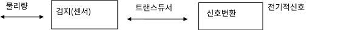
그림 3-1 센서신호의 변환절차
1. 센서의 개요
자동화 시스템에서 공정처리가 자동적으로 제어된다면 프로세서는 제어를 위해 정처리에 관한 정보를 받아야 하는데 예를 들면 온도, 압력, 힘, 길이, 회전각, 물체의 유.무, 유량 등과 같은 물리적인 값들이 필요한 정보가 된다.
센서들은 이와 같은 물리적인 값에 반응하고 적절한 신호로 변환되어 전달된다. 이러한 센서는 생산 공정에 응용된 자동화 시스템이 제어 과정에서 물리적인 계량을 요구하며 이를 제어 계통에 연결시켜 자동화를 이루는데 있어 중요한 역할을 담당하고 있는데 기계기술에서 시작되어 최근의 전자기술, 제어기술 등으로 발전하여 오늘날의 메카트로닉스기술로 발전됨으로 인하여 메카트로닉스시대의 첨병기술등으로 또는 첨단 과학기술의 핵심으로 불리우는 센서기술은 그 적용범위가 점차 많아질 것이다.
2. 센서의 정의
어떠한 것을 느끼거나 감지할 수 있는 능력을 지닌 "센서(sense)"에서 유래된 센서(sensor)라는 표현이 1960년대부터 사용된 이래 여러 가지 표현으로 불리워졌으며 확실히 정의된 것은 아니지만 대체적으로 다음과 같이 정의되고 있다. 간단한 의미로 본다면 "측정 대상물로부터 해당 정보를 감지 또는 측정하여 그 측정량을 전기적인 신호로 변환하는 장치"로 정의 하며 좀 더 세부적으로 는 "온도, 압력, 조도, 자기, 유량, 가스의 농도, PH 등과 같은 물리량이나 화학량의 절대치나 변화 또는 소리나 전파의 강도를 검지하여 유용한 신호로 변환하는 장치"로 정의 된다.
이상을 종합하면 센서란 "물리량의 절대값 또는 변화를 감지하여 이를 사용가능한 전기신호로 변환하는 장치"로 정의할 수 있다. 이러한 센서와 유사한 용어로 트랜스듀서(transducer)가 있는데, 이것은 "측정량에 대응하여 처리하기 쉬운 유용한 출력신호를 주는 변환기(converter)"로 구분하여 정의할 수 있다.
다시 말해 센서는 계측대상의 상태에 관한 정보를 얻어 전기신호를 바꾸는 장치이고 트랜스듀서는 계측대상의 상태량을 이에 대응한 또 다른 물리량의 신호로 변환하는 장치이다. 하지만 센서와 트랜스듀서를 엄격히 구분하여 사용하기가 어렵고 특별히 구별할 이유는 없다고 본다. 따라서 센서 또는 트랜스듀서, 검지기, 검출단, 상태 정보의 검출장치 등을 모두 같은 의미로 생각하기로 하자.
아무튼 센서란 대상물이 가진 정보를 검출하여 제어기에서 원하는 신호를 발생하는 장치인데 여기서 신호가 의미하는 바를 살펴보자.
전기오븐의 적색등은 전기오븐의 스위치가 켜져 있는지 아니면 꺼져 있는지를 알려줄 수 있는 또 다른 의미의 정보를 나타내는 신호이며 전기히터의 불빛은 온도의 높고 낮음을 사용자에게 알여줄 수 있는 신호를 표시한다. 이처럼 신호란 정보의 전달자로소의 역할을 수행하는데 일반적으로 센서란 정보의 전달을 전기적으로 수행하는 장치란 의미를 갖고 있다. 즉 대부분의 센서의 출력은 전기신호로 생각할 수 있겠다.
한편 센서의 기능을 인간의 오감(시각, 청각, 후각, 미각, 촉각)의 역할을 대신하는 기기로 비유를 하는데 사실 센서는 인간이 오감으로 느낄 수 없는 무색, 무취의 가스의 양이나 농도, 자기의 세기, 적외선, 전자파 등을 검출 할 수 있다. 아무튼 인간의 감각기능과 기계장치의 센서를 비교해 보면 사람이 외부로 부터의 오감을 통하여 얻은 자극은 전기신호로 변환되어 이것이 신경을 통해 뇌에 전달되고 적절한 판단에 따라 손과 발은 정보화 된다. 이에 비해 센서는 대상물로부터 검출한 신호를 센서(또는 트래스듀서)에서 적당한 형태의 신호로 변환되고 신호 전송로를 경유하여 제어 기에 전달되며 예정된 작업순서나 내용에 따라 처리되어 출력단을 구동 하게 된다. 다시 말해 센서란 사람의 오감과 같은 역할을 하는 제어 시스템의 요소 이다.
인간의 오감 | 감각기관 | 센서 | 비고 |
시각 | 눈 | 광 센 서 | 물리센서 |
청각 | 귀 | 음파센서 | |
촉각 | 피부 | 압력센서 감온센서 | |
후각 | 코 | 가스센서 | 화학센서 |
미각 | 혀 | 이온센서 바이오센서 | |
오감 이외의 센서 | 중력센서 초음파센서 자기센서등 | ||
표 3-1 인간의 오감과 센서의 비교
또한 센서는 일반적으로 자동화 시스템과 외계와의 인터페이스로서 외부에 직접 노출되므로 항상 가혹한 환경에서도 장시간 안정하게 동작하여야 하는 것이 요구된다. 물론 특수한 용도로는 일시적인 사용으로 충분할 때도 있지만 대체로 온도의 변동이나 열적·기계적 스트레스, 습도 또는 수분에 의한 화학변화, 전자계나 빛의 영항 등을 받지 않고 동작해야 한다.
특히 제어계의 기본요소로 사용될 때 고장의 경우 그 영향은 심각하므로 고안정성, 고내구성, 고신뢰성, 긴수명 등이 센서의 기본요건이다.
이상과 같의 정의할 수 있는 센서의 사용 목적은 다음과 같이 3가지로 요약할 수 있다.
가. 정보의 수집
수치정보, 지식정보의 취득이나 수집을 목적으로 하다.
(1) 계량계측 : 과학 연구에 있어서 계측·관측이나, 제조 또는 상거래에 필요한 계량의 측정에 의한 정확한 수치정보를 제공한다.
(2) 탐지·탐사 : 특정의 목적을 위해서 측정대상물의 유무 상태를 탐지하여 정보화 하는데 대부분의 경우 원격계측방법이다.
(3) 감시·경보·보호 : 시스템이나 장치에 대한 상태를 감시하여 이상의 검출, 위험의 예고, 이상이나 위험시의 경보신호 및 보호장치를 가동시키기 위한 신호를 발생하게 함으로써 안전관리를 가능하게 한다.
(4) 검사·진단 : 생산된 제품에 대한 특성의 적격성 여부, 인체의 이상 정도 등의 판정에 필요한 계측을 실시하도록 한다.
나. 정보의 변환
(1) 문자·기호·코드 등의 형식으로 종이나 필름 등에 기록된 정보를 컴퓨터, 팩시밀리 등에 이용할 수 있는 신호로 변환한다.
(2) 각종의 정보매체에 기록된 정보를 해독할 수 있도록 변환한다. 이와 같은 장치로써의 예를 들면 자기디스크, 광디스크 등이 있다.
3. 센서의 종류
센서는 정의 자체가 확실히 규명되지 않은 것처럼 그 종류 역시 다종다양하며 뚜렷이 분류할 수도 없고 대체로 구성에 따른 분류, 검출 신호별 분류, 재료별 분류, 용도별 분류 등으로 구별되고 있는데, 일반적으로 측정 또는 검출하고자 하는 양이 물리량인가 역학적인 양인가 아니면 화학량인가에 따라 물리센서, 역학센서, 화학센서로 다음과 같이 나누기도 한다.
(1) 화학센서 : 효소센서, 미생물센서, 면역센서, 가스센서, 습도 센서, 매연 센서, 이온센서
(2) 물리센서 : 온도센서, 방사선센서, 광센서, 칼라(색)센서, 전기센서, 자기 센서
(3) 역학센서: 길이센서, 변위센서, 압력센서, 진공센서, 속도·가속도센서, 진동센서, 하중센서
또한 센서는 크게 대상물로부터 정보를 획득하는 방법에 따라 능동형(active)센서와 수동형(passive)센서로 구분하기도 하는데 그 내용은 다음과 같다.
(4) 능동형 센서 : 외부로부터 에너지를 공급해야 하는 형태로 측정하고자 하는 대상물에 에너지를 제공하고 그 대상물에서 나오는 정보를 감지하거나 외부로부터 제공된 에너지가 측정대상물에서 또 다른 에너지로 변환되고 그 변환된 에너지를 정보로 검출하는 기기로써 레이저센서나 일반적인 광센서 등이 여기에 속한다.
(5) 수동형 센서 : 외부로부터 별도의 전원(에너지)공급이 필요하지 않은 형태로 측정하고자 하는 대상물에서 나오는 정보를 그대로 정보로 받아들이는 기기로 대표적인 예로는 초전센서나 적외선센서가 여기에 속한다.
4. 센서 재료
센서는 그 구분을 명확하게 하기 어려울 정도로 많은 종류가 있다.
센서의 재료에는 결정 또는 비결정 구조로 반도체적 성질을 갖추고 있으며 관심이 집중되고 있는 산화물 반도체, 결정 반도체, 복합 반도체 물질로 구분될 수 있는 반도체센서, 이러한 세라믹재료를 이용한 세라믹센서, 그리고 센서에서 변환기(트랜스 듀서)역할을 수행하든지 경우에 따라 액추에이터 기능을 수행하기 위한 기구 또는 센서 구조에 필요한 보조 재료에 사용되기도 하는 금속 재료를 이용한 금속센서, 또한 다른 재료를 조합해서 만든 것으로 원래의 재료 특성이 각각 충분히 살아 있고, 복합화에 의해 단일 재료에서 기대할 수 없는 새로운 기능을 나타낼 수 있는 복합 재료를 이용한 복합센서가 있다.
기본 요건 | 3S | 감도 |
선택도 | ||
안정도 | ||
2S | 복귀도 | |
신뢰도 | ||
부수 요건 | 호완성,기능성,적응성, 규격성,생산성, 정확성,보존성,경제성,특성의 저편차,등등 | |
표 3-2 센서의 구비요건
가. 반도체 재료
반도체 재료가 본격적으로 센서에 응용되기 시작한 것은 1900년대 말부터이고 주로 광도전 재료나 전자감광 재료인 ZnO 등의 산화물이나 ZnSe 등의 셀렌화물 등을 중심으로 개발이 진행되었는데 이것이 다른 재료의 센서에 비해 현대 기술사회에서 각광을 받게 된 이유는 다음과 같은 반도체 재료만의 특징을 갖추고 있기 때문이다.
(1) 소형화·경량화가 가능하다.
(2) 경제적이다.
(3) 집적화가 용이하다.
(4) 응답속도가 빠르다.
(5) 분해능력을 높일 수 있다.(고감도 실현)
(6) 지능화가 가능하다.
센서에 응용되는 반도체 재료를 보면 주로 광센서에 집중되고 있음을 알 수 있다. 우선 광도전 효과형 재료를 보면 촬상관의 타킷 광전면 물질에 사용되는 것으로 가시광선 용도의 PbO증착막, Sb2S3증착막, 그리고 적외광의 PbO-PbS증착막, 자외광의 Se계 또는 As2S3계 등의 비정질 중착막이 잇고 광도전 셀도 파장에 따라 적용되는 여러 재료가 있으며 자외광 영역에서 근 적외광 영역까지 넓은 대역에 걸쳐 빠른 응답 특성을 나타내는 포토다이오드, 포토트랜지스터 등의 광기전력 효과형, 그리고 1차원 및 2차원 어레이(array) 포토센서로 알려진 CCD(Change Coupled Device)소자에 이르기까지 실로 다양하다.
연 습 문 제
다음 각 물음에 대하여 답을 하시오.
1. 센서란 무엇인지 설명하시오.
2. 센서의 종류에 대해서 열거하고 설명하시오.
3. 센서의 구비요건은 무엇인가?
01신호 검출
1. 마이크로 스위치
일방향롤러 레벌형으로 감지물체에 대해 레버의 작동이 양방향 모두 움직이나 신호는 굴절된 레버장치에 의해서 한쪽 방향으로만 신호를 발생하는 스위치을 말한다.
구분 | 단 자 기 호 | 점접 | 비고 |
COM | 공 통 단 자 | c접점 | |
NC | 상시개로단자 | b접점 | |
NO | 상시폐로단자 | a접접 |
그림 3-2 단자기호와 접점형식
(1) 특징
반복 정밀도가 높다.
응답속도가 빠르다
2. 근접 센서
가. 정전용량형
검출 전극에 물체가 접근하면 전극과 검출체(금속,유전체) 표면에 분극이 발생하여 대지간의 정전용량이 변화하는 것을 이용하여 검출체의 유.무를 검출한다.
예) 금속, 비금속(물, 유리, 종이, 프라스틱등)
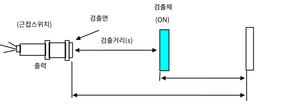
그림 3-2 근접스위의 검출방법
(1) 특징
금속 및 비금속 (물. 유리. 종이. 프리스틱)등을 검출 감지거리는 재질의 유전 계수에 따라 차이가 나면 개략적인 지리별 유전계수는 아래와 같다.
구분 | 유전계수 | 구분 | 유전계수 |
공기 | 1 | 유리 | 5∼10 |
나무 | 6∼10 | 물 | 8 |
스치로폴 | 12 |
표 3-3 물체별 유전계수
(2) 검출거리(S)
검출체가 검출면에 접근하면 ON되는점을 말하고 검출체의 두께 변화와 재질에따라 변환다.(철⇒스텐레스⇒황동⇒알루미늄⇒동)
(3) 응차거리
검출면에 접근하여 출력신호가 ON되는 점에서 검출체가 검출면으로부터 멀어지면 출력신호가 OFF 되는 거리
(4) 응답주파수
검출물체를 반복하여 근접시켰을때, 1초동안 오동작 없이 동작 가능한 가장 빠른 횟수를 말한다.
3. 광전센서
광전센서는 검출센서 매체로 광을 응용한 것으로 포토센서라고 한다. 일반적으로 광전센서는 비접촉식의 검출방식으로 물체의 유,무와 통과여부 뿐만 아니라 물체의 대.소, 색상, 명암등을 검출할 수 있다.
빛을 검출하여 사용 가능한 량으로 변환하는 소자를 말하는데 실제로 시판 되고 있는 광센서는 제어의 용이함 때문에 전기신호로 변환되는 경우가 많다. 자외광에서 적외광까지 광파장 영역의 광에너지를 검지 하는데 광변환 원리에 기초를 두고 광기전력 효과형, 광도전 효과형, 광전자 방출 효과형으롤 분류 한다.
가. 원리
반도체에 빛이 닿으면 자유전자와 자유 정공이 증가하고 광량에 비례한 전류증가(반도체의 저항변화)가 일어나는 현상인 광전도 효과를 이용한 센서
(1) 광전 센서의 검출형태
검출 방식에 따라서 투과형, 미러반사형, 직접반사형으로 분류된다.
(2) 투과형 광전센서
투광기와 수광기를 똑같은 광축선상에 서로 마주 보도록 설치하고 그 사이로 검출체가 통과하게 되면 광량의 변화가 발생하여 이를 이용하여 검출하는 센서
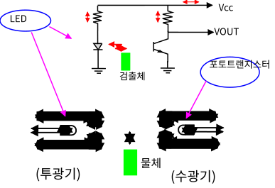
그림 3-3 광전센서의 외형과 기본 회로
(3) 미러 반사형 광전센서
투.수광부 일체식으로 광전센서와 반사미러 사이를 검출체가 통과하면 반사 광량의 변화가 생겨 이를 검출하는 센서
(4) 직접 반사형 광전센서
투.수광부 일체식으로 투광부에서 투사된 광이 검출체에 부딪혀서 반사된 광을 수광부가 직접 검출하는 센서

그림 3-4 광전인터럽트의 외형
나. 광전소자
(1) 발광 다아오드
갈륨비소, 갈륨 알루미늄비소, 갈륨인등의 PN접합 소자로 구성되어 있으며, 순방향 전류에 의해 적외광선 또는 가시광선을 방사한다.
발광효율이 높고 출력이 큰 적외 발광다이오드가 많이 이용되며, 용도에 따라서 적색, 녹색 발광소자가 이용된다.
(2) 광전 다이오드
실리콘이나 게르마늄의 PN접합에 의한 광기전력 효과를 이용한 광전변환 소자를 말하며 광신호 검출시 사용된다.
(3) 광전 트랜지스터
광기전력 효과를 이용한 것으로 광전 다이오드와 비교해 볼때 트랜지스터의 증폭특성을 지닌소자이다. 수광감도가 높아 발광다이오드의 광에 대한 감도특성이 좋으므로 적당한 베이스 전류로서 소자를 제어하기에 매우 쉬운 특징을 가지고 있다. 따라서 이소자는 광전 센서의 수광소자로 널리 사용되고 있다.
(가) 지향각
광전센서가 검출물체를 감지하여 정상적으로 동작할 수 있는 각도의 범위
(나) 동작모드
- 입광동작
투광부로 부터 나온 광선이 수광부에 전달될 때 출력 개폐소자(릴레이, 트랜지스터)가 ON되는 동작방식
- 차광동작
투광부로 부터 나온 광선이 수광부에 전달되지 않을때 출력 개폐소자(릴레이,트랜지스터)가 ON되는 동작방식
(다) 응답시간
광 입력이 단속으로 부터 제어출력이 ON 또는 복귀가 OFF하는데 까지 걸리는 시간지연을 의미한다.
다. 일반적인 특징
비접촉 방식으로 물체를 검출하므로 검출체에 물리적인 손상을 입히지 않는다.
검출체의 표면 반사량, 투과량등의 빛 변화를 감지해 물체를 검출하므로 다양한 물체(투명유리, 금속, 플라스택, 나무, 액체 등)가 검출대상이 될 수 있으며, 사용에 재약이 적다.
빛을 이용하므로 사람의 눈으로 인식 불가능한 고속물체 이동도 검출할 수 있다.
광전센서에 사용되는 변조광은 직진성이 뛰어나고 파장이 짧아 물체의 크기, 위치, 두께등 고정동의 검출이 가능하다.
검출체에 대한 검출범위는 렌즈, 반밀러와 같은 광학계나 차광판, 슬리트등을 이용하여 쉽게 제어할 수 있다.
자기와 진동등의 영향이 무관하다.
색의 특정파장에 대한 흡수효과를 이용하여 광전센서로 수광되는 반사 광량의 차이에 의한 색상의 판별이 가능하다.
연 습 문 제
다음 각 물음에 대하여 답을 하시오.
1. 마이크로 스위치에 대해서 설명하시오.
2. 광전센서에 대해서 설명하시오.
02센서와 자동화 시스템
자동화 시스템에서는 공정처리를 위하여 공정처리 상태에 대한 정보가 필요하다. 센서는 공정처리 상태에 대한 정보를 만들고, 수집하며 이와 같은 정보를 프로세서에 전달하는 제어 시스템의 한 부분이다. 이 장에서는 공정처리중에 다루게 될 필요한 물리적인 값이 어떻게 결정되며 어떠한 형태로 전달되는 지에 관하여 살펴보고자 한다.
03센서의 개요와 정의
자동화 시스템에서 공정처리가 자동적으로 제어된다면 프로세서는 제어를 위해 공정처리에 관한 정보를 받아야 하는데 예를 들면 온도, 압력, 힘, 길이, 회전각, 물체의 유무, 유량 등과 같은 물리적인 값들이 필요한 정보가 된다.
센서들은 이와 같은 물리적인 값에 반응하고 적절한 신호로 변환되어 전달된다. 이러한 센서는 생산 공정에 응용된 자동화 시스템이 제어 과정에서 물리적인 계량을 요구하며 이를 제어 계통에 연결시켜 자동화를 이루는데 있어 중요한 역할을 담당하고 있는데 기계기술에서 시작되어 최근의 전자기술, 제어기술 등으로 발전하여 오늘날의 메카트로닉스기술로 발전됨으로 인하여 메카트로닉스시대의 첨병기술 등으로 또는 첨단 과학기술의 핵심으로 불리우는 센서기술은 그 적용범위가 점차 많아질 것이다.
센서의 응용시 그 분야에 따라 선정시 고려해야 할 사항은 다음과 같은 것들이 있다.
① 정확성② 감지거리
③ 신뢰성과 내구성④ 단위시간당 스위칭 사이클
⑤ 반응 속도⑥ 선명도
1-1. 센서의 정의
어떠한 것을 느끼거나 감지할 수 있는 능력을 지닌 "센서(sense)"에서 유래된 센서(sensor)라는 표현이 1960년대부터 사용된 이래 여러 가지 표현으로 불리워졌으며 확실히 정의된 것은 아니지만 대체적으로 다음과 같이 정의되고 있다. 간단한 의미로 본다면 "측정대상물로부터 해당 정보를 감지 또는 측정하여 그 측정량을 전기적인 신호로 변환하는 장치"로 정의 하며 좀 더 세부적으로 는 "온도, 압력, 조도, 자기, 유량, 가스의 농도, PH 등과 같은 물리량이나 화학량의 절대치나 변화 또는 소리나 전파의 강도를 검지하여 유용한 신호로 변환하는 장치"로 정의 된다.
이상을 종합하면 센서란 "물리량의 절대값 또는 변화를 감지하여 이를 사용가능한 전기신호로 변환하는 장치"로 정의할 수 있다. 이러한 센서와 유사한 용어로 트랜스듀서(transducer)가 있는데, 이것은 "측정량에 대응하여 처리하기 쉬운 유용한 출력신호를 주는 변환기(converter)"로 구분하여 정의할 수 있다.
다시 말해 센서는 계측대상의 상태에 관한 정보를 얻어 전기신호를 바꾸는 장치이고 트랜스듀서는 계측대상의 상태량을 이에 대응한 또 다른 물리량의 신호로 변환하는 장치이다. 하지만 센서와 트랜스듀서를 엄격히 구분하여 사용하기가 어렵고 특별히 구별할 이유는 없다고 본다. 따라서 센서 또는 트랜스듀서, 검지기, 검출단, 상태 정보의 검출장치 등을 모두 같은 의미로 생각하기로 하자.
아무튼 센서란 대상물이 가진 정보를 검출하여 제어기에서 원하는 신호를 발생하는 장치인데 여기서 신호가 의미하는 바를 살펴보자.
보행자들은 횡단보도의 신호등이 붉은색인 경우 일반적으로 멈춘다. 이 경우 신호등의 신호는 사람에게 일정시간 동안 자동차 통행이 우선임을 알려준다. 물론 이러한 일은 교통경찰의 수(hand)신호에 의해서도 행해지며, 두 경우의 신호는 모두 사람에게 교통 상황에 대한 정보를 알려준다.
전기오븐의 적색등은 전기오븐의 스위치가 켜져 있는지 아니면 꺼져 있는지를 알려줄 수 있는 또 다른 의미의 정보를 나타내는 신호이며 전기히터의 불빛은 온도의 높고 낮음을 사용자에게 알여줄 수 있는 신호를 표시한다. 이처럼 신호란 정보의 전달자로소의 역할을 수행하는데 일반적으로 센서란 정보의 전달을 전기적으로 수행하는 장치란 의미를 갖고 있다. 즉 대부분의 센서의 출력은 전기신호로 생각할 수 있겠다.
한편 센서의 기능을 인간의 오감(시각, 청각, 후각, 미각, 촉각)의 역할을 대신하는 기기로 비유를 하는데 사실 센서는 인간이 오감으로 느낄 수 없는 무색, 무취의 가스의 양이나 농도, 자기의 세기, 적외선, 전자파 등을 검출 할 수 있다. 아무튼 인간의 감각기능과 기계장치의 센서를 비교해 보면 사람이 외부로 부터의 오감을 통하여 얻은 자극은 전기신호로 변환되어 이것이 신경을 통해 뇌에 전달되고 적절한 판단에 따라 손과 발은 정보화 된다. 이에 비해 센서는 대상물로부터 검출한 신호를 센서(또는 트래스듀서)에서 적당한 형태의 신호로 변환되고 신호 전송로를 경유하여 제어 기에 전달되며 예정된 작업순서나 내용에 따라 처리되어 출력단을 구동하게 된다. 다시 말해 센서란 사람의 오감과 같은 역할을 하는 제어 시스템의 요소이다. (그림 1-1 참조)
이러한 센서는 정보화 기능의 레벨, 작용 시스템 또는 장치에 있어서의 위치, 구성의 규모에 따라서 몇 개의 계층으로 구분지을 수 있다. 사실 어떠한 센서가 어느 계층에 속하는 가는 상대적인 것이므로 확연 하게 한정지을 수는 없지만 센서기술의 체계화라는 측면에서 본다면 부분품(part) 조합품(component), 유닛(unit), 시스템(system)으로 구분할 수 있다. 다음의 <표 1-1>은 센서의 계층을 보여준다.
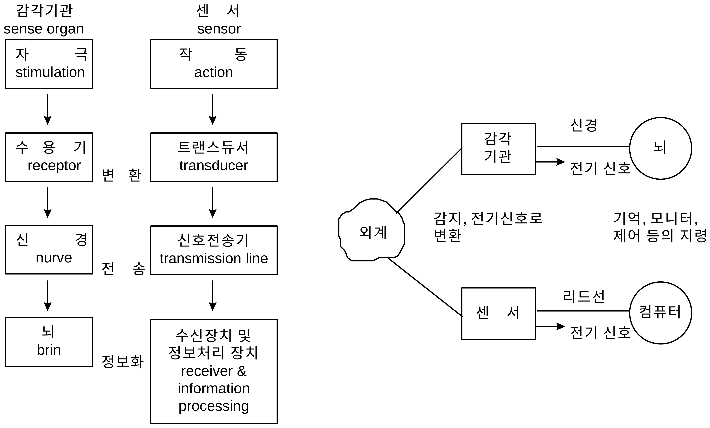
그림 1-1 감각기관과 센서의 비교
또한 센서는 일반적으로 자동화 시스템과 외계와의 인터페이스로서 외부에 직접 노출되므로 항상 가혹한 환경에서도 장시간 안정하게 동작하여야 하는 것이 요구된다. 물론 특수한 용도로는 일시적인 사용으로 충분할 때도 있지만 대체로 온도의 변동이나 열적·기계적 스트레스, 습도 또는 수분에 의한 화학변화, 전자계나 빛의 영항 등을 받지 않고 동작해야 한다.
센서의 계층 | 정의 | 센 서 의 예 |
독립시스템 | 완전히 독립된 센싱 시스템 또는 장치 | 레이더 온도그래프장치 |
부분시스템 | 시스템 또는 장치의 감지보조장치 | 로봇 시각센서 |
유닛 | 각종 시스템, 장치에 적용할 수 있는 독립센서 | TV카메라, 광전스위치 |
커포넌트 | 특정장치에 부착되는 전용센서 어셈블리 | 광 디스크헤드, 반도체 압력센서, 카메라용 자동측량센서, 오토포커스용 거리센서 |
파트 | 조립 트랜스듀서, 기본 트랜스듀서 | 포토인터럽터, 포토다이오드 |
표 1-1 센서의 계층
특히 제어계의 기본요소로 사용될 때 고장의 경우 그 영향은 심각하므로 고안정성, 고내구성, 고신뢰성, 긴수명 등이 센서의 기본요건이다.
이상과 같의 정의할 수 있는 센서의 사용 목적은 다음과 같이 3가지로 요약할 수 있다.
가. 정보의 수집
수치정보, 지식정보의 취득이나 수집을 목적으로 하다.
① 계량계측 : 과학 연구에 있어서 계측·관측이나, 제조 또는 상거래에 필요한 계량의 측정에 의한 정확한 수치정보를 제공한다.
② 탐지·탐사 : 특정의 목적을 위해서 측정대상물의 유무 상태를 탐지하여 정보화 하는데 대부분의 경우 원격계측방법이다.
③ 감시·경보·보호 : 시스템이나 장치에 대한 상태를 감시하여 이상의 검출, 위험의 예고, 이상이나 위험시의 경보신호 및 보호장치를 가동시키기 위한 신호를 발생하게 함으로써 안전관리를 가능하게 한다.
④ 검사·진단 : 생산된 제품에 대한 특성의 적격성 여부, 인체의 이상 정도 등의 판정에 필요한 계측을 실시하도록 한다.
나. 정보의 변환
① 문자·기호·코드 등의 형식으로 종이나 필름 등에 기록된 정보를 컴퓨터, 팩시밀리 등에 이용할 수 있는 신호로 변환한다.
② 각종의 정보매체에 기록된 정보를 해독할 수 있도록 변환한다. 이와 같은 장치로써의 예를 들면 자기디스크, 광디스크 등이 있다.
다. 제어정보의 취급
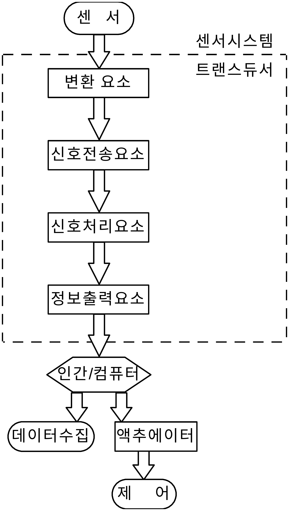
제어대상장치, 제어장치 등이 놓여 있는 환경의 상태를 검출하여 제어정보로 활용함으로써 이들 장치의 상태를 안전하게 제어하거나 목표값에 접근하도록 한다. 이상과 같이 센서의 사용목적을 말할 수 있으며 시스템이라는 것은 여러가지 부품이 조직적으로 결합되어 완성되는 것으로써 각 부품이 각각의 역할을 분담, 수행하여 일정의 원리나 법칙, 규칙, 순서에 따라 상호관계를 유지하며 합동적으로 전체적인 일정한 기능을 수행하는 하나의 조직체라고 볼 때 센서는 이러한 시스템의 외계 또는 내계에 대한 인터페이스 역활을 하는 부분 시스템(subsystem)이라 할 수 있다.
넓은 의미로 이 자체가 변환요소(트랜스듀서 등), 신호전송요소(송신기, 케이블, 수신기 등, 신호처리요소, 정보처리요소, 정보출력요소(디스플레이, 출력인터페이스)로 구성되고 정확한 정보를 출력할 수 있도록 노이즈(noise), 드리프트(drift), 온도 보상 및 보정기구 등이 삽입된
그림 2-2 센서 시스템의 구성
1개의 시스템이다. 따라서 센서를 필요로 하는 시스템에서는 센서의 성능(측정범위, 감도, 응답속도, 정밀도)이 시스템의 가치를 좌우하게 되며 시스템의 신뢰성은 센서의 신뢰성에 강하게 의존하게 된다. [그림 1-2]는 시스템에 있어서의 센서의 역할을 나타냈으며 점선 부분은 센서 시스템을 나타낸다.
04센서의 종류
센서는 정의 자체가 확실히 규명되지 않은 것처럼 그 종류 역시 다종다양하며 뚜렷이 분류할 수도 없고 대체로 구성에 따른 분류, 검출 신호별 분류, 재료별 분류, 용도별 분류 등으로 구별되고 있는데, 일반적으로 측정 또는 검출하고자 하는 양이 물리량인가 역학적인 양인가 아니면 화학량인가에 따라 물리센서, 역학센서, 화학센서로 다음과 같이 나누기도 한다.
① 화학센서 : 효소센서, 미생물센서, 면역센서, 가스센서, 습도 센서, 매연 센서, 이온센서
② 물리센서 : 온도센서, 방사선센서, 광센서, 칼라(색)센서, 전기센서, 자기 센서
③ 역학센서 : 길이센서, 변위센서, 압력센서, 진공센서, 속도·가속도센서, 진동센서, 하중센서
또한 센서는 크게 대상물로부터 정보를 획득하는 방법에 따라 능동형(active)센서와 수동형(passive)센서로 구분하기도 하는데 그 내용은 다음과 같다.
④ 능동형 센서 : 외부로부터 에너지를 공급해야 하는 형태로 측정하고자 하는 대상물에 에너지를 제공하고 그 대상물에서 나오는 정보를 감지하거나 외부로부터 제공된 에너지가 측정대상물에서 또 다른 에너지로 변환되고 그 변환된 에너지를 정보로 검출하는 기기로써 레이저센서나 일반적인 광센서 등이 여기에 속한다.
⑤ 수동형 센서 : 외부로부터 별도의 전원(에너지)공급이 필요하지 않은 형태로 측정하고자 하는 대상물에서 나오는 정보를 그대로 정보로 받아들이는 기기로 대표적인 예로는 초전센서나 적외선센서가 여기에 속한다.
이상과 같이 크게 물리, 역학, 화학센서로 구분하거나 능동형, 수동형 센서로 구분하는 외에도 앞에서 언급한 것처럼 많은 분류방법이 있는데 이를 다음의 <표 1-2>에 나타냈다.
분 류 방 법 | 센서구분 |
1. 구성 | 기본센서, 조립센서, 응용센서 |
2. 기구 | 기구형(또는 구조형), 물성형, 기구·물성혼합형 |
3. 검출신호 | 아날로그센서, 디지털센서, 주파수형센서, 2진신호형센서 |
4. 검지기능 | 공간량, 역학량, 열역학량, 전자기학량, 공학량, 화학량, 시각, 촉각 등 |
5. 변환방법 | 역학적, 열역학적, 전기적, 자기적, 전자기적, 공학적, 전기화학적, 촉매화학적, 효소화학적, 미생물학적 |
6. 재료 | 반도체센서, 세라믹센서, 금속센서, 고분자센서, 효소센서,미생물센서 등 |
7. 용도 | 계측용, 감시용, 검사용, 제어용 등 |
8. 구성·기능의 특징 | 다차원센서, 다기능센서 |
9. 용도분야 | 산업용, 민생용, 의료용, 이화학용, 우주·군사용 등 |
표 1-2 센서의 분류
하지만 어떠한 분류방법을 취한다고 하더라도 센서를 어느 한 분류에 소속시켜 명확하게 구분하거나 하나의 표현하기는 곤란한 것이므로 이로한 다차원의 센서를 일목요연하게 분류하고 이를 설명하는 데는 어떠한 분류방법도 만족스러운 것이 못된다.
05센서 재료와 신호
센서는 그 구분을 명확하게 하기 어려울 정도로 많은 종류가 있다.
센서의 재료에는 결정 또는 비결정 구조로 반도체적 성질을 갖추고 있으며 관심이 집중되고 있는 산화물 반도체, 결정 반도체, 복합 반도체 물질로 구분될 수 있는 반도체센서, 이러한 세라믹재료를 이용한 세라믹센서, 그리고 센서에서 변환기(트랜스듀서)역할을 수행하든지 경우에 따라 액추에이터 기능을 수행하기 위한 기구 또는 센서 구조에 필요한 보조 재료에 사용되기도 하는 금속 재료를 이용한 금속센서, 또한 다른 재료를 조합해서 만든 것으로 원래의 재료 특성이 각각 충분히 살아 있고, 복합화에 의해 단일 재료에서 기대할 수 없는 새로운 기능을 나타낼 수 있는 복합 재료를 이용한 복합센서가 있다.
1-1. 반도체 재료
반도체 재료가 본격적으로 센서에 응용되기 시작한 것은 1900년대 말부터이고 주로 광도전 재료나 전자감광 재료인 ZnO 등의 산화물이나 ZnSe 등의 셀렌화물 등을 중심으로 개발이 진행되었는데 이것이 다른 재료의 센서에 비해 현대 기술사회에서 각광을 받게 된 이유는 다음과 같은 반도체 재료만의 특징을 갖추고 있기 때문이다.
① 소형화·경량화가 가능하다.
② 경제적이다.
③ 집적화가 용이하다.
④ 응답속도가 빠르다.
⑤ 분해능력을 높일 수 있다.(고감도 실현)
⑥ 지능화가 가능하다.
센서에 응용되는 반도체 재료를 보면 주로 광센서에 집중되고 있음을 알 수 있다. 우선 광도전 효과형 재료를 보면 촬상관의 타킷 광전면 물질에 사용되는 것으로 가시광선 용도의 PbO증착막, Sb2S3증착막, 그리고 적외광의 PbO-PbS증착막, 자외강의 Se계 또는 As2S3계 등의 비정질 중착막이 잇고 광도전 셀도 파장에 따라 적용되는 여러 재료가 있으며 자외광 영역에서 근 적외광 영역까지 넓은 대역에 걸쳐 빠른 응답 특성을 나타내는 포토다이오드, 포토트랜지스터 등의 광기전력 효과형, 그리고 1차원 및 2차원 어레이(array) 포토센서로 알려진 CCD(Change Coupled Device)소자에 이르기까지 실로 다양하다.
이외에도 홀 효과를 이용할 수 있는 Si, Ge 또는 GaAs, InSb 등의 반도체 재료가 자기센서용으로 이용되고 있으며 피에조 저항 효과형 재료로 주로 사용되는 Si를 압전반도체 재료로 활용한 압력센서 등도 있다. 또한, Ge, Si, Se 등의 반도체는 최근 그 응용의 범위가 넓어지고 특히 Si는 반도체 이론의 확립과 함께 P-N접합기술, 미세가공기술, 표면처리기술, 전극형성 및 조립기술 등의 급속한 진보에 의해 그 응용이 활발해 지고 있다. 한편 보다 경제적으로 센서를 제작할 수 있는 비정질, 즉 아몰포스(Amorphous) 반도체 재료에 관한 연구가 진행되고 있으며 광센서나 솔라 셀(solar cell)에 이용되기 시작하고 있는데 이중 아몰포스 Si(a-Si)는 결정 재료에서 염가로 제작할 수 있는 특징을 가지고 있으므로 앞으로 발전이 확대될 재료의 하나이다. 다음의 <표 1-3>센서에 사용된 반도체 재료를 보여준다.
분류 | 대표적인 반도체 재료 | |||
광 센 서 | 광도전 효과형 재료 | 촬상관용 | 자외광용 | Se계, As2Se3계(X선…PbO) |
가시광용 | Sb2S3, PbO, CdSe, As-Te계,ZnS, CdTe계 | |||
적외광용 | PbO, PbO-Sb2S3, PbO-PbS | |||
광도전 셀 | 가시광용 | CdS, CdSe, ZnO, Se(X선, Υ선… CdS) | ||
적외광용 | PbS, InSb, CdHgTe, Ge | |||
포토다이오드 포토트랜지스터 CCD | 자외광용 | Au-ZnS, Ag-ZnS, Si | ||
가시과용 | Si, Ge | |||
적외광용 | Ge, SiInP, GaAs, InSb, InAs | |||
자기 센서 | 홀 효과형 소자 재료 자기 저항형 소자 재료 | InSb, InAs, Si, Ge, GaAs InSb, InAsBi | ||
압력 센서 | 압전 반도체 재료 피에조 저항 효과형 재료 | Si, Si, Ge, GaAs, GaSb | ||
표 1-3 반도체 재료
나. 세라믹 재료
최근 세라믹 재료를 센서에 응용하는 경우가 급속히 늘어나고 있는데 일반적으로 세라믹재료를 센서의 기능 재료로 이용하는 경우 결정 자체의 성질을 이용하거나 입자간 경계 및 입자의 성질을 이용하거나 또는 표면의 성질을 이용하게 되는 데 대체로 세라믹 본래의 특성인 열, 빛, 가스, 습도, 이온 등 다양하다. 세라믹 재료가 센서에 응용된것들은 <표 1-4>처럼 매우 다양하나 이들중 특히 세라믹의 특징을 잘 나타내고 있는 물질 몇 가지를 들어 그 각각의 특징을 살펴보자.
(1) 안정화 지르코니아
이것은 원래의 내화물을 역적으로 안정화하기 위해 ZrO2CaO를 안정제로서 고용시킨 것으로 이로 인하여 내열성, 내식성은 우수한 반면 CaO를 고용했기 때문에 산소 이온 전도성이 있고 산소센서로도 이용된다.
(2) 티탄산 바륨 반도체
이 형태는 새로운 물성 또는 기능을 갖게 하는 방법을 제공 한다고도 말할 수 있는데 소결체 특유의 저항-온도 변화 현상을 나타내며 입계를 적극적으로 이용한 예도 있으며 이러한 방법으로 만들어진 재료에는 ZnO배리스터(varistor)가 있다.
(3) 산화주석
산화주석(SnO2)은 N형 반도체이고, 공기중에 방치하면 산소를 흡착하여 고저항으로 된다. 이흡착 산소에 가연성 가스가 반응하면 저저항으로 되어 가연성 가스센서로 된다.
(4) CoO-MgO계 고용체
이것은 반도체의 화학량 변화에 기준하여 산소센서에 사용된다. CoO는 산소 분압 변화로 도전율이 변하는 기능 소자의 본체이지만 열분해되기 쉬운 결점이 있다. 한편 MgO는 고저항체이고 기능 소자로서 사용할 수 없지만 안정한 물질이다. 이 양자를 고용시킴으로써 CoO의 기능성과 MgO의 안정성의 장점을 살린 사용법이 가능하다. 이처럼 세라믹은 고용체의 형성에 의하여 물성의 제어가 가능하게 되는 이점이 있다.
온 도 센 서 | 출력 | 효과 | 재 료 (형 태) | 비교 | |
저항변화 | 캐리어 농도의 온도 변화 | (NTC) | NiO, FeO, CoO, CoO-Al2O3, SiC(벌크, 후막, 박막) | 온도계, 브로미터 | |
(PTC) | 반도성 BaTiO2(소결체) | 과열 보호 센서 | |||
반도체-금속상전리 | VO2, V2O3 | 온도 스위치 | |||
자성변화 | 폐리자성-상자정전리 | Mn-Zn계 페라이트 | 온도 스위치 | ||
위치 속도 센서 | 반사파의 파형벼화 | 압 전 효 과 | PZT : 티탄산 지루콘산 연 | 어군 감지기 탐상기 혈류계 | |
광 센 서 | 기전력 | 초 전 효 과 | LiNbO3,LaTaO3,PZT SrTiO3 | 적외선 거출 | |
가시광 | 형광 | ZnS(Cu, Al), Y2O2S(Eu) | 컬러 TV 브라운관 | ||
ZnS(Cu, Al) | X선 모니터 | ||||
열 혈 광 | CaF2 | 열형광 선량계 | |||
가 스 센 서 | 저항변화 | 가연성 가스접촉 연소반응열 | Pt촉매/알루미나/Pt선 | 가연성 가스농도계 경보기 | |
산화 반도체의 가스흡탈착에 의한 전하 이행 | SnO2, ZnO, r-Fe2O3, LaNiO3 (La, Sr) CoO3 등 | 가스 경보기 | |||
산화 반도체의 화학량 논적 벽화 | TiO2, CoO-MgO | 자동차 배기가스센서 | |||
기전력 | 고온고체전해질 산소농담전기 | 안정화지 코니아(ZrO2-CaP,- MgO,-Y2O3-La2O3 등) 토니아(ThO2, -Y2O3) | 배기가스센서 용강,소결, 불완전연소 센서 | ||
습 도 센 서 | 출 력 | 효과 | 재료 (형 태) | 비교 | |
저 항 | 흡습이온전도 | LiCl, P2O5, ZnO-Li2O | 습 도 계 | ||
산화물반도체 | TiO2, NiFe2O4, MgCr2O4+TiO2, ZnO, Ni페라이트, Fe3O4클로미트 | 습 도 계 | |||
유전율 | 흡습에의한 유전율 변화 | Al2O3 | 습 도 계 | ||
이 온 센 서 | 기전력 | 고체 전해질막 농담 전지 | AgX, LaF3, Ag2S, 유리박막, CdS, Agl | 이온 농담 센서 | |
저 항 | 게이트 흡착 효과 MOSFET | Si(게이트재 H+용:Si3 N4/SiO2, S2-용:Ag2 S, X용:AgX,PbO) | 이온민감성FET (IS FET) | ||
표 1-4 세라믹 재료
1-2. 금속 재료
센서에 응용되는 금속 재료는 그 용도에 따라 관재, 선재, 다공질재, 세선, 분체, 도금재, 편금속 등 여러 가지 형태로서 사용되고 이것은 재료 기능과 같은 관계가 있다. 즉 금속 재료는 동질의 것이라도 그 사용 목적과 사용 방법에 따라 개성화되어 있다고 할 수 있다.
금속 재료의 센서에의 응용범위는 점차로 확대되고 있지만 재래의 금속 재료에 대한 적절한 이용이 아직도 많은 분야에서 중요한 위치를 차지하고 있다. 최근에는 아몰포스 합금, 금속 초미립자 등 재료의 새로운 질과 형태가 얻어짐으로써 새로운 센서용 금속 재료에 응용이 확대되고 있다.
아몰포스 합금의 내식성과 자성, 은(Ag)과 같은 초미립자 성분의 촉매성 등이 주목되고 있는 분야이며 형상 기억 합금 및 금속 수소 화합물 등의 신기능 응용이 진행되고 있다. 다음의 <표 1-5>에 센서용 금속 재료를 나타냈다. 표에서 보듯이 센서의 구성상 중요한 역할을 하는 급속 재료로는 전기저항 재료, 도체 재료, 접점 재료, 자왜 재료, 감온자성 재료, 열전대 재료, 초전도 재료, 형상기억 재료, 내열내식 재료, 촉매합금 재료, 탄성 재료 등이 있다.
기능분류 | 금속재료 | 응용(센서, 센서요소) | ||
감온자 성재료 | 정자 분류 | Mo-퍼멀로이, 모넬, 더모 폼 | 계기 자석(자속 온도 보상) | |
자기 상전리 합금 | Fe-Ni-Co-Si계 | 온도 릴레이 | ||
자 왜 재 | 규소강, Ni, 퍼멀로이 | 로드셀, 강자성 광파이버 | ||
탄 성 재 | Cu-Ni-Mn, Cu-Be, Ni-SpanC, Sus3 6 | 압력계 수압막, 수압, 벨로스 부르동관 | ||
기 능 분 류 | 금 속 재 료 | 응용(센서, 센서요소) | ||
저 팽 창 재 | 인발(맴버) | 바이베탈, 서모스텟 | ||
형상 기억재 | Ni-Ti, Cu-Al-Zn, Cu-Al-Ni, Cu -Su, Cu-Zn | 서모스탯 밸브, 정온도 개폐기 | ||
내 식 재 | 각종 스테인리스강, 모넬, 청동 | 오리피스, 터빈, 밴투리관 | ||
내 열 재 | 스테인리스강, 버스테로이, 인코넬 | 열전대 시스 | ||
봉 착 재 | 42합금, 46합금, 52합금, 426합금코발, 무산소 Cu | 센서 패키지 | ||
촉 매 재 | Pt, Pb, Ag, Ni | 가스 센서 | ||
수조 저장재 | LiNi5H6-7, FeTiH1.5-1.95, VH1-2 NbH1-2, Mg2NiH8 | 수소 서모스탯 | ||
전기 저항 재료 | 측온 저항재 | Pt, Cu, Ni, W(가는선, 박, 박선) | 온도 센서, 유속 센서 | |
왜형 저항재 | Ni, 망가닌, 콘스탄탄, 어드밴스, 니크롬 V, Pt-Lr합금 | 왜형 게이지, 로드 셀 | ||
강자성 자기 저항재 | 자계 센서, 자기버블 검출기 | |||
도 전 재 료 | 도 전 재 | Cu, Al, Ag, Au, Pt, Ni, Ti, Ta, W(선, 판, 박막, 인쇄, 도체 등) | 계기·자심 등의 코일, 리드선, 압전체·반도체·유전체의 전극 | |
접 점 재 | Ag, Ag합금, Cu-Pb합금, Rh,Ru | 리드 릴레이, 마이크로 스위치, 바이메탈, 온도 스위치 | ||
초 전 도 재 | Pb, Nb | SQUID, 고감도, 자속계, 심자계, 적외선, 마이크로파 검출 | ||
전기화학/물리화학 전극 | Pt, Ag, Pd, Hg, 스테인리스강 | pH계, ZrO2산소센서,효소센서 | ||
열 전 대 재 료 | 열 전 대 | Pt-13Rh/Pt, Pt-10Rh/Pt, 크로멜-알루멘, Cu-콘스탄탄, 크로멜-콘스탄탄, Fe-콘스탄탄, Pt-30Rh /Pt, Ir/Ir-40Rh, W-5Re/W-26Re, 크로멜/Au-FeO.07 | 열전대 온도 센서, 열전형 보호릴레이, 전력계, 전열식 진공계 |
보 상 도 선 | Cu-sNi, Cu, Cu-30N | ||
자 성 재 료 | 경질 자성체 | 78.5Ni:퍼멀로이(PA) 45∼50Ni:퍼멀로이(PB) Mo-퍼멀로이(PC), 터프 폼 | 릴레이, 자기 실드 릴레이 자기레드/실드, 고감도 릴레이 |
반경질 자성체 | 49Co-2∼5V-bal Fe | 레칭 릴레이, 리드 스위치 | |
위갠트 와이어 | 10V-52Co-38Fe, 50-Ni-50Fe | 자기 회전 센서 | |
영구 자석 (경질 자성체) | 알리코계, 회토류-코발트계(Sm- Co | 마이크로폰, 진동 센서, 가동코일 계기, 픽업 |
표 2-5 금속 재료
1-3. 복합 재료
복합 재료란 서로 다른 재로를 조합하여 만든 것으로 합체계돠 생성계로 크게 구분할 수 있는데 합체계란 복합의 전후에 있어서 구성 소재의 새질, 형태가 거의 변하지 않는것이며, 생성계는 복합 전후에 구성 소재의 재직, 형태 및 분율이 상당량 변화하는 것을 말한다.
현재 널리 사용되고 있는 복합 재료는 대부분이 합체계이고 생성계는 일방향 응고합금등 몇 가지밖에 없다. 합체계의 복합 재료는 매트릭스와 분산질(강화재)의 조합에 의해서 분류되는여러 가지 이름이있으나 매트릭스에 의해서 부르는 것이 보통이다.
센서에 응용되는 복합 재료중 유기 재료를 메트릭스에 무기 재료와 복합화를 도모하여 양자의 장점을 합쳐 이루어낸 압전성 복합 재료와 도전성 고분자 재료 그리고 2종의 금속을 합성하여 온도센서로 사용되는 바이메탈을 예를 들어 살펴보자.
(1) 압전성 복합 재료
압전성 복합 재료의 최초의 것은 압전 세라믹 분말과 고분자 재료의 플랙시블 압전체이다. 고분자 재료에 폴리 불화 비닐, 6불화 플로필렌, 4불화 에틸렌 공중 합체인 불소고무를 혼합한 것을 이용해서 압전적 특성을 개선하고 그것을 이용해서 압전 키보드가 개발되었다.
(2) 도전성 고분자 복합 재료
현재까지 실용화되어 있는 도전성 고분자 복합 재료는 도전성 고무가 많고 대부분이 실리콘 고무와 카본 블랙 또는 은 입자계이다. 이외에 전파 차폐 재료, 고압 송전 케이블용 피복 재료, 도전성 유지 강화 플라스틱 등의 응용 예도 알려져 있다. 도전고무는 단순한 고무와는 다르고 가압시에 그 부분만 도전성을 나타내는 가압 도전성 고무도 있다. 가압시와 가압 해제시의 전기 저항값의 차가 106[Ω]이상도 있으므로 각종의 압력센서로도 이용되고 있다.
(3) 바이메탈
열 팽창 계수가 큰 금속과 작은 금속의 두 판을 접합시키면 온도 변화에 따라서 변형 또는 내부 응력이 발생하여 온도센서가 된다. 이를 바이메탈이라 부르며 온도계나 컬러 텔레비전의 색 차이 방지용 온도보상에 사용된다.
4 신호처리
센서는 측정 대상물로부터 물리량의 절대값이나 그 변화량을 검출하여 이들을 제어 시스템에 정보로 제공하기 위해 필요한 신호로 그 측정량에 대응한 값들로 바뀌어야 하는데 이를위해 적절한 신호처리가 이루어져야 한다.
이 절에서는 신호처리를 위해 필요한 측정대상과 신호의 형태 및 신호변환에 관하여 살펴보자. 다음은 전기히터(측정점)의 온도(측정변수) 감지에 의해 설정온도 이상이 되면 경고등이 점등하는 제어기의 간단한 신호처리 내용이다. 이 경우 온도 측정을 위해서 열팽창 계수가 다른 두 개의 금속판을 겹쳐 구성한 바이메탈 온도계를 사용한다. 이 두 금속판이 가열되면 서로 다른 변형이 일어나므로 이를 이용하여 전기회로를 구성하는 것이 이 문제의 해결책이며 다음의[그림 1-3]이 문제해결을 위한 회로이며 신호의 전달은 다음과 같이 진행된다.
① 전기히터의 온도 변화는 바이메탈을 기계적으로 휘게 한다. 이것이 측정변수인 온도에 의한 최초의 변형이다.
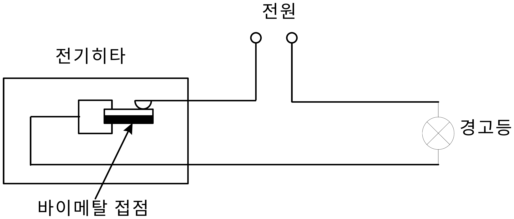
② 온도가 한계치에 이르면 바이메탈은 전기회로를 폐쇄시킬 때까지 구부러져 전류를 흐르게 한다.
③ 바이메탈 접점이 단락(short)하여 전
기회로를 형성(switch on)하면 램프가 점
등한다.
④ 마지막으로 관찰자는 신호를 감지하여 적절한 조치를 취한다.(제어 시스템의 경우 제어가 조치를 취함)
그림 1-3 전기히터의 온도 감지
이 경우 램프의 점등은 전기히터의 온도가 상한 온도 이상임을 나타내며 소등은 전기히터의 온도가 상한 온도 이하임을 나타낸다.
이상과 같이 온도의 변화를 감지하여 관측자(또는 제어기)가 필요로 하는 정보의 형태로 바꾸어 주는 것을 신호 처리에 의해 이룰 수 있다. 신호 처리에는 측정 대상물로부터 어떤양을 측정, 또는 검출하는 것으로부터 사용하거나 전송하기 용이한 신호로의 변환 및 정보의 전송, 지시, 기록 뿐아니라 미약한 검출신호의 확대, 증폭 등도 포함될 수 있다.
1-1. 측정 대상
센서의 어원이 감각(능력)의 의미를 지닌 센스(sense)에서 유래되었듯이 무엇인 가를 느끼는 장치를 뜻하고 있는 것처럼 센서의 측정 대상은 감지하고자 하는 어떤 것이든 해당된다고 하겠다, 예를 들면 온도, 광, 힘, 길이, 각도, 압력, 자기, 속도 등의 절대값이나 변위 등이 이에 해당하는데 일반적으로 온도, 광, 자기센서가 대표적이다.
① 온도 센서 : 온도란 우리의 생활과 밀접한 관계가 있는 양으로 이를 측정하는 센서의 대상은 기체, 액체, 고체, 플라즈마, 생체 등 다양하므로 그 종류 또한 매우 많고 접촉식과 비접촉식으로 구분할 수 있다.
② 광 센서 : 자외광에서 적외광까지 광파장 영역의 광 에너지를 검지하는데 그 분류는 광 변환 원리에 기초를 두고 광기전력 효과형, 광도전 효과형, 광전자 방출형 등으로 구분할 수 있다.
③ 자기 센서 : 자계에 관련한 물리적 현상이 이용된 것으로 단순히 자기력을 이용하여 실린더 등의 운동 상태를 쉽게 감지할 수 있는 리드(reed)스위치를 비롯하여 홀(hall) 소자 등 전기량으로 자계를 변환시키는 소자이다.
이외에도 측정 대상에 따라 구별되는 센서를 몇 가지 더 살펴보자.
①압력 센서 : 압력이란 한 물체내에 임의의 평면을 가상하거나 또는 두 물체의 접촉면을 고려할 때 그 면의 단위 면적당 작용하는 법선 방향의 힘의 크기를 나타내는데 압력센서란 대상물이 가지고 있는 압력의 정보를 감지하는 것으로 스트레인 게이지, 반도체 압력센서, 다이어프램식 및 압전 소자 등이 해당된다.
② 습도 센서 : 대상물이 함유하고 있는 수분의 정도를 측정할 수 있는 것으로 수분 흡착에의한 도전성의 변화 즉 전기저항의 변화를 이용한 것과 적외선의 흡수율 변화를 이용한 것, 또는 어느 습도 이상에서는 물질이 착색하는 원리를 이용한 것 등이 있으며 가열성, 비가열성의 세라믹 습도 센서 및 고분자 습도센서가 있다.
③ 속도 센서 : 대상물로부터 속도의 정보를 감지하기 위한 기기인데, 속도센서는 이정보를감지하기 위하여 대상물에 음파 에너지나 마이크로파 에너지를 의식적으로 주고 그 음파 또는 마이크로파 에너지로부터 속도의 정보를 검출하기도 하며 길이에 대한 변위를 측정하여 변위 시간의 미분값을 취함으로써 간접적으로 구할 수도 있으며 간단하게 는 인코더와 같은 기기를 이용할 수도 있다.
④ 음파 센서 : 음파에는 사람이 귀로 들을 수 있는 20[Hz]∼20[KHz] 사이의 가청음 및 들을 수 없는 그 이상의 주파수를 뜻하는 초음파가 있는데 이들 음파 자체의 정보를 검출하기도 하지만 물체 유무 판별을 위해 대상물에 음파 에너지를 공급하고 되돌려지는 신호를 검출하여 정보로 이용하기도 한다. 또한 초음파센서는 물체 내부의 결함검출에도 이용된다.
⑤ 화학 센서 : 화학 반응에 의한 수단을 사용하여 감지하는 기기이며 전기화학작용, 촉매반응, 이온교환, 광화학작용 등에 의해 변환되는 것들이 있는데 습도센서, 가스센서(산소센서, 매연센서, 독성 가스센서, 반도체 가스센서) 및 이온센서((PH전극, 가스 감응 전극)등이 있다.
앞에서 열거한 외에도 방사능센서, 레벨센서 또 여러 종류의 활용이 되고 있는 물체 유무판별용 센서등도 측정 대상에 따른 종류에는 있으나 서로 증복되는 경우도 있으므로 이들의 상세한 내용은 다음 절에서 논하기로 하자.
1-2. 신호 형태
신호란 정보를 담고 있는 물리량을 의미하는데 표시할 시간과 정보량에 따라 다음과 같이 4가지로 구분할 수 있다.
① 아날로그신호(analog signal) : 연속시간 신호라고도 불리우는데 정보의 정의역(domain)이 어느 구간에서 모든 점으로 표시되는 신호이다. 즉, 시간과 정보가 모두 연속적인 신호이다.
② 연속신호(contineous signal) : 시간은 연속이나 그 정보량은 불연속적인 신호이다. 정보의 정의역은 기준 단위의 정수배로 표현된다.
③ 이산시간신호(discrete-time signal): 이 신호는 아날로그신호를 일정한 간격의 표본화(sampling)를 통하여 얻을 수 있는데 시간은 불연속이고 정보는연속적인 신호이다. 즉 샘플링 주기를 T라 하고 그 정보를X*(t)라 하면 이 이산신호는 t=nT인 때만을 제외하고 모든 시간에서 X*(t)=0이다. 이것은 자연계에 존재하는 모든 신호는 아날로그적이지만 이를 제어 시스템에서 정확히 처리하기는 매우 어려우므로 보다 경제적이고 효율적으로 처리하기 위해 이용되는 방법이다. 이 신호는 최근 DSP(Digital Signal Processing) 기술의 발달로 음향기기, 통신, 제어 계측 등 많은 분야에서 응용된다.
④ 디지털신호(digital signal) : 시간과 정보 모두 불연속적인 신호이다. 이것은 아날로그 신호를 일정한 샘플링 주기로 표본화하고 기준 단위의 정수배로서 그 정보량을 표시한 것으로 이 유한한 정보를 표현하기 위해 몇 개의 2진신호(binary)가 이용된다.
이상과 같이 제어 시스템에서는 4가지 신호유형으로 분류된 정보가 처리될 수 있는데 우리는 센서로부터 출력되는 신호의 또 다른 형태에 대하여 살펴보자.
가. 2진신호(Binary Signal)
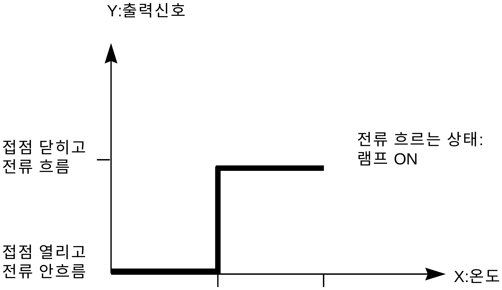
이 신호의 형태는 바이메탈 온도계에서 찾아볼 수 있다. [그림 1-4]는 온도와 센서의 출력신호와의 관계를 나타낸 것이다. 온도는 X축상에 나타내고 Y축상에는 일정온도 상승시(도달시)바이메탈 스위치
의 점검단락에 의한 표시램프의 점등 및 온도 미달시 전류가 흐르지 않음에 따른 표시램프의 소등을 나타낸다.
그림 1-4 바이메탈 온도계의 신호
분명히 램프의 점등 및 소등의 신호 상태는 전류의 흐름 및 차단 또는 접점의 단락 및 개방을 나타낸다. 상한 온도 이하에선 신호가 낮은 레벨이고 상한 온도 이상에선 신호가 높은 레벨로 가정되지만 이것은 평균값이 아니며 신호의 낮은 레벨에서 높은 레벨로의 변화는 무한히 빠른 속도로 진행된다. 즉 신호는 두 가지의 값으로 가정될 수 있으므로 이를 2진신호라 부르는 것이다. 이러한 2진신호는 제어공학에서 특히 중요하며 신호의 유무, 1과 0, ON-OFF, 이상-이하 같은 정보 또는 전진과 후진, 위와 아래, 클램핑과 반클램핑 상태에 대한 정보 전달자로서 사용된다.
그러나 처리가 용이한 이 신호도 높은 레벨고 낮은 레벨로 분리되는 경계의 입력 전압, 문턱 전압(threshold voltage)부근에서는 상당히 곤란한 처리 관계가 발생할 수 있으므로 일반적으로 전기적인 신호를 발생하는 센서에서는 기계적이건 전기적이건 간에 출력에 히스테리시스를 두어 분명한 두 상태를 유지시키고 있다. 다음[그림 1-5]는 히스테리시스에 관하여 설명하기 위한 것이다.
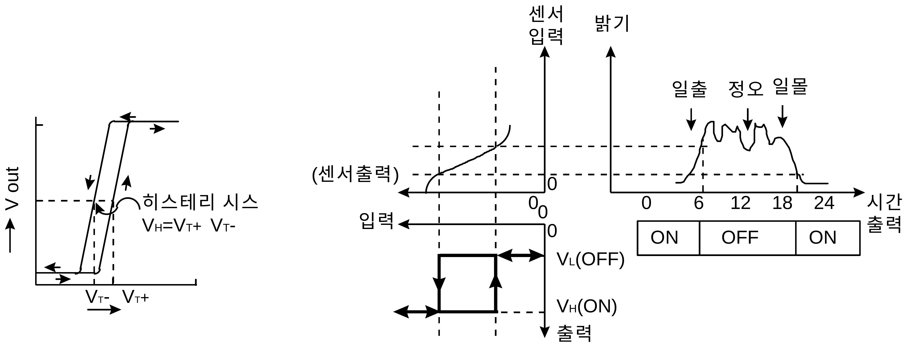
(a)입·출력 관계(b) 히스테리시스 특성이 부가된 센서의 출력예
그림 1-5 히스테리시스
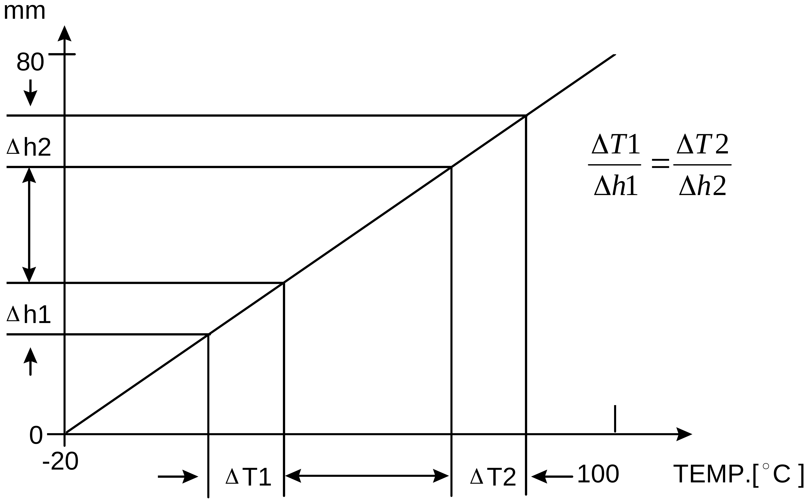
나. 아날로그신호(Analog Signal)
앞에서도 미리 살펴본 바 있듯이 센
서로부터의 출력 정보가 연속적인 값
을 갖는 것으로 온도 변화에 따른 신
호값의 변화를 볼 수 있는 수은 온도
계를 예로 들 수 있다.
수은은 열에 의해 평창되며 모세관
속의 수은의 높이가 신호값 즉, 정보
이다. 그래프의 X축상에 온도를 Y축
상에 수은주를(mm)단위로 표시함으로그림 1-6 선형적 신호 변환
그림 1-6 선형적 신호 변환
써 다음의 [그림1-6]과 같은 신호값 변화를 볼 수 있다.
이러한 온도계를 이용하면 우측의 [그림1-6]에서 알 수 있듯이 -20[。C ]에서 100[。C ] 사이의 온도 변화는 수은주의 높이로 정확하게 읽을 수 있는데 측정하고자 하는 값과 신호값과 모두가 등비 관계에 따라 연속적으로 변화하고 있음을 알 수 있으며 이러한 이유에서 이 신호를 아날로그신호라 한다.
이 경우 관심을 갖는 것은 수은주의 변위가 아니라 온도에 있기 때문에 액주관의 눈금은 해당하는 섭씨 또는 화씨 온도계로 사용되기 위해 온도로 분할되어 있다.
신호 변화의 특성을 서술하면 그래프는 일정한 기울기를 갖고 있으므로 각 측정점에서의 온도 변화는 수은주 높이의 변위 변화와 같다.
즉
Δh1ΔT1 = Δh2ΔT2때문에 신호치의 변화는 선형으로 나타낼 수 있다.
일반적으로 센서는 온도를 측정하거나 그 밖의 다른 물리량을 측정해도 그 변위 자체가 연속적이므로 출력신호 자체도 아날로그적으로 발생되는데 2진신호 출력인 경우 슈미트트리거회로 등의 파형 정형을 위한 기준값들을 이들이 가진 정보 그대로 전압, 전류 또는 저항값의 변화로 내보내는 것이다.
다음의 [그림 1-7]은 입력신호에 따른 출력신호 변화를 처리방법에 따라 나타낸 것으로 [그림1-7]의 (a)는 일반적인 회로를 구성하였을 때의 출력 상태로 입력의 경계 전압(드레쉬 홀드 전압)에서ON-OFF의 상태가 반전되는 것을 알 수 있다. [그림1-7의 (b)는 슈미트트리거회로를 부가한 상태의 출력을 나타내고 있는데 이 경우의 출력은 경계 전압에서 바뀌는 것이 아니라 그림에서 보여지듯이 어느 일정 전압 이상 입력이 발생(Vth+)하여야 출력 상태가 ON으로 되며 또한 출력 신호의 OFF도 경계전압이 아닌 그 이하의 전압(VTH-)에 도달하여야만 되는 것을 알 수 있 있다. 물론 이것은 2진신호를 출력하기 위한 센서에 내장된 것이며 아날로그신호를 출력하는 센서에는 이 회로가 생략된다.
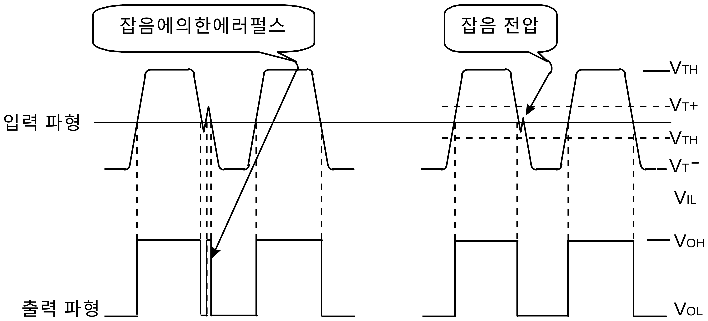
(a)일반 회로시(b)슈미트트리거 회로 부과시
그림 1-7 센서의 출력
1-3.신호 변환
앞에서 살펴본 것과 같이 온도계에서 바이메탈 온도계는 신호의 변화가 ON-OFF의 상태로 만 지시되며 수은 온도계의 경우는 측정값이 수은주의 높이로 표현되기 때문에 측정된 온도와 일치되는 신호값(전기적)이 요구되는 기술분야에는 적합하지 않다. 때문에 이러한 온도의 변화를 적정한 크기의 전압값(또는 전기적으로 변화 가능한 값)으로 바꾸기 위한 측정방법이 필요하다. 온도에 비례한 측정값을 전기적으로 바꾸어주는 온도센서를 사용하여 기술분야에 응용할 수는 있으나 이러한 측정값의 변화를 2진신호 또는 연속적인 값을 보다 처리하기 쉬운 디지털신호로 변환할 필요가 있다. 경우에 따라서는 신호의 증폭, 선형화(linearize), 필터또는 브리지회로 등을 특성에 따라 부가할 경우가 발생한다.
가. 디지털 변환
어떤 제어 시스템에서 하나의 2진신호만을 사용하여 0∼10[V]의 아날로그 입력신호를 처리한다면 다음처럼 2개의 균등한 간격으로 나누어진다.
전압범위신호
0∼4.9[V]0
5.0∼10[V]1
그러나 이것은 불안정한 전압 범위를 나타내므로 2개의 2진신호를 사용하여 다음과 같이 4개의 전압 범위로 나타낼 수도 있다.
전압범위신호1신호2전압범위신호1신호2
0∼2.4[V]005.0∼7.4[V]10
2.5∼4.9[V]017.5∼10[V]11
이것은 2개의 전압 범위를 더 추가하여 세분화한 것으로 전압 범위 등 처리할 정보가 세분화될 경우의 수는 2진신호의 수, 즉 신호bit(binary unit)수에 의하여 결정된다.
조합의 개수=2n(n은 2진신호의 개수)
즉 2개의 2진신호를 사용하면, 아날로그신호는 22=4개의 간격으로 나뉘어지며 8개의 2진신호로 입력되는 아날로그신호를 표현하면 28=568개의 간격으로 나눌 수 있으므로 0∼10[V]의 아날로그 값의 최소 범위는10/256=0.039[V]이다.
이와 같은 최소 정보 단위는 2진신호에 의해 표현되며 1개의 2진신호를 1bit라 하고 8개의 2진신호를 데이터가 전송될 때 우리는 8bit 데이터라 말한다. 8개의 bit조합을 워드(word) 또는 코드워드(code word)라 하며 한 개의 8bit 코드워드가 전송되기 위해서느 8개의 신호선이 필요하다. 즉 256 경우의 신호 변환을 위해 2진신호 8개가 필요하다. 다음의 [그림1-8]은 아날로그 입력신호를 디지털적으로 변환한 변환기를 보여준다.
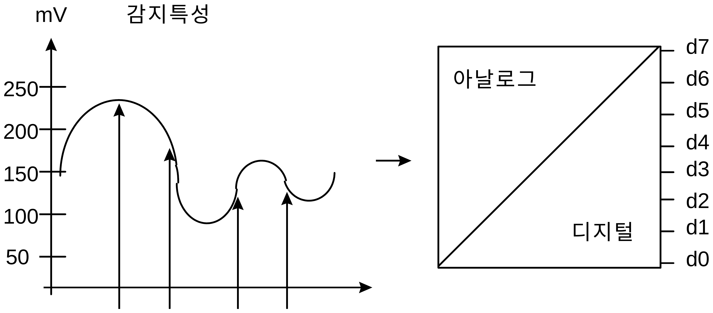
그림 1-8 아날로그-디지털 변환기
입력측에 공급되는 아날로그 신호를 등가의 비트 조합값으로 변환하여 출력측에 전달하는 기능을 가진장치를 아날로그 - 디지털 변환기(A/D converter)라 한다. 온도센서의 경우 온도가 측정되면 이 아날로그 변화값을 A/D변환 회로를 거쳐 빈번히 등가의 디지털값으로 변환하여 해당 출력신호를 보낸다. 이때 변환기의 입력측 아날로그신호는 특정시간 간격으로 분석되며 그에 해당하는 디지털 값으로 변환되는 것이 일반적이다. 이것을 샘플링 주기라 말하는데 아날로그신호의 변화가 빠르고 많을수록 데이터의 분실을 방지하기 위해 샘플링 횟수가 많아져야 하는데 이 샘플링 주기(초당 분석작업 횟수)는 제어 시스템에 의해 제한된다.
보통의 경우 샘플링 주기는 입력신호가 가진 변화 주파수보다 2배 정도 빠르게 설정되면 충분히 원래의 입력신호를 분석할 수 있다. 여하튼 A/D 변환기의 첫 번째 중요한 특성은 변환 속도이며 빠른 변환의 경우 마이크론 초(μ sec) 단위이다. 두 번째 중요한 특성은 출력측에서 발생될 디지털 정보의 크기( word width) 즉 비트의 수인데 이것은 신호의 신뢰성 즉, 입력되는 아날로그신호의 값을 그에 대응한 보다 정확한 값의 표현을 의미하며 일반적으로 8bit나 16bit를 사용한다.
나. 신호 증폭
센서는 구동기기를 구동시킬 수 없는 작은 신호를 출력하므로 대부분 신호를 증폭시키는 것이 필요하다. 대체로 증폭은 트랜지스터(transistor)나 연산 증폭기(operational amplifer)등을 이용하여 수행되는데 온도에 따른 변화가 적은 연산 증폭기를 이용하는 방법이 보다 정확한 측정을 위해 좋은 방법이 된다. 한편 일반적인 연산 증폭기는 전압 차동형인데 이것은 노이즈에 영향을 받을 우려가 있어 센서의 경우는 전류 차동형 증폭기인 노튼 앰프를 증폭기로 사용하기도 한다.
다음의 [그림1-9]는 트랜지스터, 연산 증폭기 사용할 때 일반적인 회로 구성을 나타내었고 [그림1-10]은 입력신호를 1,000배로 증폭시킨 경우이다.
증폭을 할 때는 신호의 변형이나 왜곡이 되지 않도록 신뢰성을 높이는 것이 중요하며 신호 증폭기는 전기적 공압적인 것과 유압신호 증폭기 등이 있다.
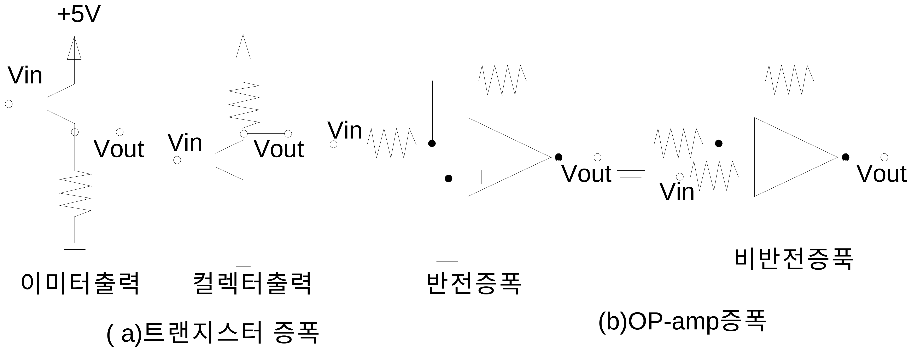
그림 1-9 신호증폭회로
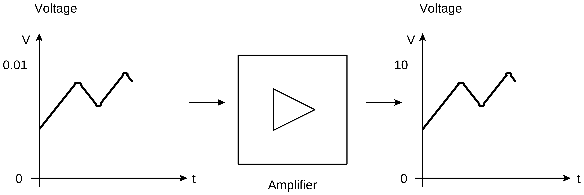
그림1-10 신호의 증폭(1000배)
다.신호의 선형화
일반적으로 센서는 비선형 신호를 출력하며 같은 센서라 할지라도 그 측정값의 변화량에 따라 변형되는 출력의 크기가 범위에 따라 다르므로 이것을 그대로 정보로 활용하기는 매우 어렵다. 따라서 이러한 신호를 시스템에 적용하기 위해서는 선형화하여 전달하는 것이 필요하고 이를 위해 선형화를 위한 회로가 필요하다.
다음의 [그림1-11]은 일반적인 센서 출력과 선형화된 출력을 보여준다.
이상과 같이 센서에서 발생되는 전기신호를 유용하게 사용하기 위한 방법외에도 불필요한 신호를 제거하기 위한 필터회로, 측정되는 전기신호를 유용하게 사용하기 위한 방법외에도 불필요한 신호를 제거하기 위한 필터회로, 측정되는 저항값의 변화량이 전압으로 변환되어 출력되는 브리지회로 등이 신호변환에 필요한 기술이며 이외에도 스프링이나 밸로스(bellows), 다이어 프램(diaphram)등의 탄성 변형을 이용한여 하중, 토크, 압력 등의 변화를 검출하거나 온도의 변화를 열변형의 원리를 응용하여 검출하는 바이메탈 또는 변위를 확대하기 위하여 사용하는 기어(gear)나 레버(lever)등의 기계적 변환도 신호변환의 일종이다.
그러나 일반적으로 센서라 한다면 그 정의에서도 표현했듯이 출력신호로 전기적인 값을 표현하는 것인데 이러한 전기적인 신호는 증폭 및 전달하는데 편리하고, 특히 고속으로 변화하는 입력신호를 측정할 경우 응답성이 우수하여 지연시간이 적고, 감도 또한 높으며 장거리 전송에 적용
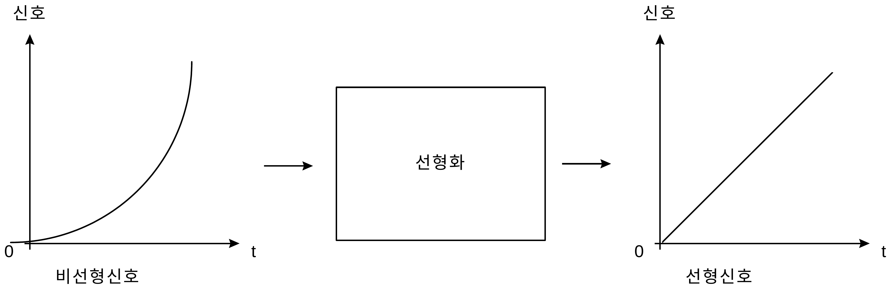
될 수 있어 자동제어에 많이 응용된다.
그림 1-11 신호의 선형화
측정체가 가진 물리량이나 그 변화를 전기적으로 변화하는 센서는 그 측정하고자 하는 양에는 관계없이 대체로 3가지로 구분할 수 있다. 일반적으로 전기회로를 구성하는 3가지 요소를 전원, 스위치, 부하라고 가정할 때 마치 이들에 대응된 요소로 볼 수 있는 신호로 처리될 수 있는 것인데 다음과 같이 구분된다.
①저항형: 물리량의 변화가 센서의 저항값의 변화로 나타나는 것으로 측온 저항체라든가 서미스터, CdS 조도센서 등이 여기에 속하며 이들의 변화를 브리지회로 등을 부가하여 전압값으로 출력하기도 한다.
②기전력형: 물리량의 변화를 기본 전기회로의 전원과 같이 스스로 전위차를 줄수 있는 기전력의 값으로 표현하는 것으로 열전쌍과 태양 전지 등이 이 범주에 속하는 센서이다.
③스위치형: 물리량의 변화에 의해 전원회로의 스위치 동작과 같은 역할을 시킬 수 있는 것으로 리드 스위치나 감열 페라이트, 바이메탈 스위치 등이 이에 속하며 저항값의 변화에 의한 것이나 전류값의 변화에 의한 것 등을 주변회로를 거쳐 스위칭 동작을 이루는 것은 제외하여야 한다. (예를 들면 홀소자와 증폭기, 슈미트트리거회로가 내장된 홀 IC) 또한 전기적인 측정량을 전기, 자기적인 원리에 의하여 힘으로 변환하는 장치를 전기계기라 하며 전기적인 양을 직접 힘으로 변환하여 지시하는 이러한 장치는 가동부를 구동하는 부분과 가동부가 특정 위치에 정지시키는 제동부, 그리고 변환기 등으로 구성되는데 이들도 신호변환의 일종이다.
06유도형 센서
유도형 센서의 기본원리 는 물리적인 값의 변화를 이용하는 것이다. 즉, 유도형 센서는 물체가 접근하면 진폭이 감소하는 고주파 L,C발진기에 의해 센서 표면에 전자계를 형성하고 감지거리 이내의 물체에 의한 변화에 따라 출력을 내보낸다.
일반적으로 유도형 센서는 금속체에만 반응하는 것으로써 대체로 100∼1000[KHz]의 고주파 전자계를 센서 표면에서 방출하여 검출헤드(발진 코일) 가까이에 금속체가 없으면 변화가 없고 도체인 금속성 물체가 감지거리 이내에 들어오면 발진코일로부터의 전자계의 영향을 받아 유도에 의한 와전류(eddy current)가 금속체 내부에 발생하여 에너지를 빼앗아 발진 진폭의 감쇄를 가져온다. 보통의 유도형 센서는 감지물체나 감지거리에 따라 비례적으로 발진 진폭의 감쇄를 나타낼 수 있으나 일반의 물체 감지용 센서는ON/OFF형의 것들이 많은데 이 경우 발진진폭의 감쇄가 정해진 값이하로 내려가면 슈미트트리거와 같은 파형정형회로 등의 스위칭 동작에 의해 출력이 발생한다. 다음의 [그림1-12]에 유도형 센서의 구성을 나타냈다.
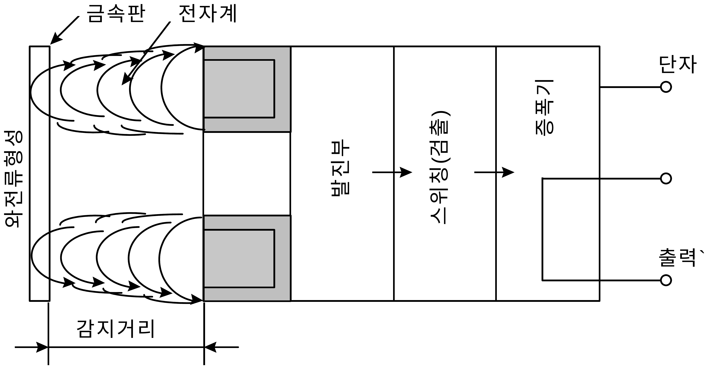
유도형 센서의 발진은 L,C병렬공진회로로 이루어지며 이들의 동작은 커패시터에 충전된 전압이 코일을 통해 방전하며 주기적으로 전류의 세기와 전압이 바뀌는 형태로 전계에너지가 자계에너지로 계속하여 서로 반복적으로 변화하는 것으로 마치 기계적으로 진동하는 스프링이 위치에너지와 운동에너지 사이를 왕복하는 것과 같으며 저항 성분이 없다면 감쇄없는 발진을 얻을 수 있다.
그림1-12 유도형 센서의 구성
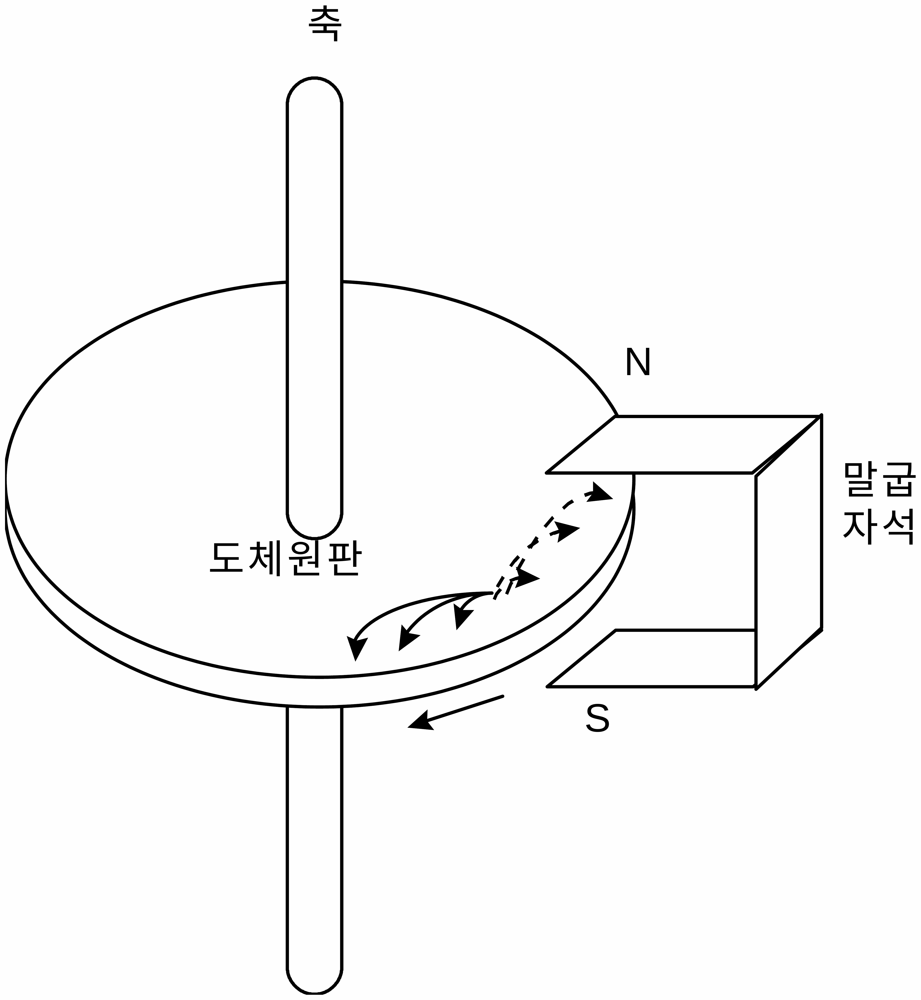
하지만 실제적으로 저항 성분이 있으므로 감쇄가 있다. 따라서 증폭장치 등이 필요하게 된다. 한면 여기서 발진 진폭의 감쇄를 가져온 와전류에 대하여 살펴보기로 하자. 와전류란 일정한 자계내에서 금속을 움직이거나 정지된 금속물체가 변화하는 자계내에 있으면 발생하는데 이의 설명을 위한 아라고의원판(Arago's disk)을 다음의 [그림 1-13]에 나타냈다. 축을 중심으로 도체인 원판이 회전할 수 있는 구조인데 말굽자석이 움직이는 앞쪽에는 자속이 증가하므로 렌쯔의 법칙에 의하여 자속의 증감을 반대하는 쪽으로 유도기전력에 의한 전류가 형성되어야 하므로 그림에서와 같이 실선 방향의 와전류가 발생하며 자석의 뒤편에서는 반대 방향 즉 점선 방향의 와전류가 형성되어 금속도체의 전체에는 축방향의 합성 전류가 흐르게 된다. 결국 이와 같은 전류와 자계에 의하여 금속도체 역시 자석의 방향으로 회전을 하는데 이것이 유도 전동기의 원리이며 전력적산계의 동작도 이 원리에 의한 것이다. 이상으로 간략하게 와전류에 관하여 살펴보았는데 이 와전류에 의한 발진 진폭의 감쇄에 따른 감지거리는 감도 조정기라 불리우는 것의 조정에 의해 스위칭 되는 기준 레벨을 바꾸는 것에 의하여 변경될 수 있다.
그림 1-13 아라고의 원판
유도형 센서의 가장 큰 장점은 신호의 변환이 매우 빠르게 이루어지는 것이다. 즉, 매우 높은 스위칭 주파수를 갖는데 대략 1000[Hz]정도의 스위칭 주파수를 가지며 어떤 것은 초당 2000번의 신호 변화를 검출하는 것도 있다. 또한 기계적으로 움직이는 부분이 있는 기계적인 접촉식 센서에 비하여 유도형 센서와 같은 비접촉식 센서는 마모되는 부분이 거의 없으므로 수명이 길다는 것도 하나의 장점이며 먼지나 진동 등 외부의 영향에 대해서도 민감하지 않기 때문에 주변 조건이 나쁜 경우에도 사용할 수 있으나 히스테리시스 폭 이상의 진동이 있는 컨베이어 벨트상의 물체를 검출하는 경우 등에는 유의하여야 한다. 이 외의 또 다른 유도형 센서의 장점은 다음과 같은 것들이 있다.
① 적은 소모 전력(수 [μW])
② 자석 효과는 없다.
③ HF 휠드이므로 간섭이 없다.
④ 감지 물체안에 온도 상승이 없다.
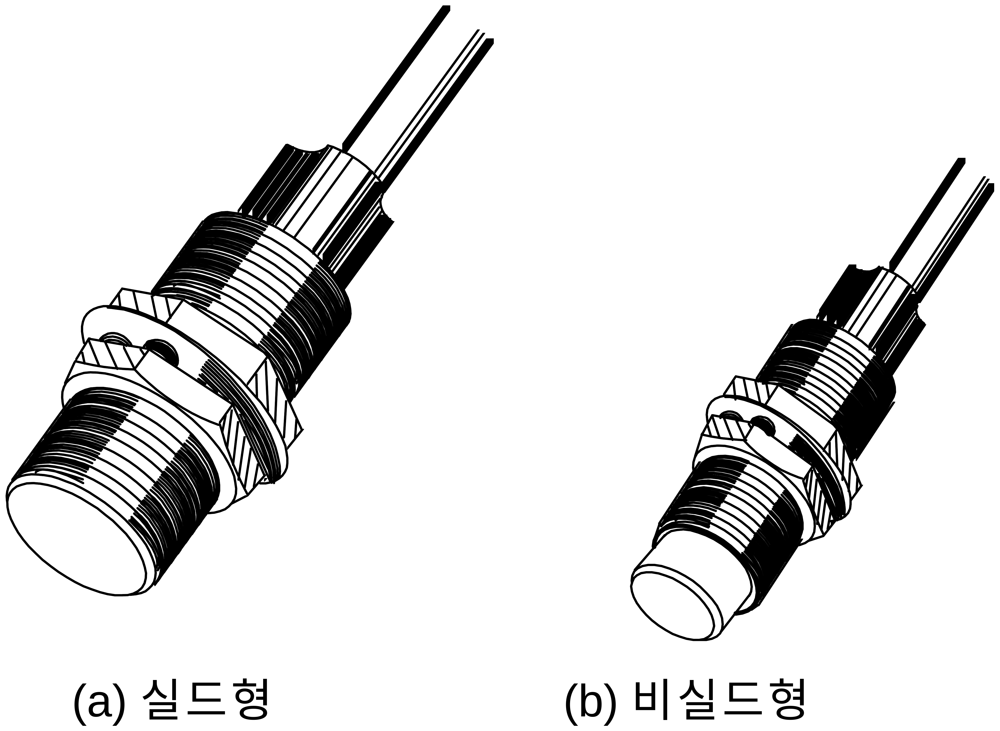
유도형 센서의 감지거리는 감지 물체의 전기전도성에 의존하며 고주파일수록 낮은 전도성을 가지며 물체의 강자성에 의해 물질 깊이 자계가 대체로 감지거리는 강(steel)의 경우 지름의 1/2정도이며 대략 4∼5[mm]로 짧은 것들이 많은데 이 경우에도 실드형(flush type)은 주변에 영향을 받을 수 있으므로 특별한 경우에 사용한다.
우측의 [그림 1-14]에 실드형과 비실드형의 유
도형 센서를 나타냈다. 여기서 우리가 구별하기
쉬운 방법은 센서가 장착되기 위한 금속마운팅그림 1-14 유도형 센서
부분과 물체를 검출하기 위한 발진 전자계가 발생되는 비금속부분 (빗금친 부분)이 일치되었는지(flush type) 않은 지를 살펴보는 것이다. 물론 가격면에서는 비실드형 센서가 싸나 주변의 영향을 받을 수 있기 때문에 상용에 제한을 받는다.
다음의 [그림 1-15]에 유도형 센서의 감지거리를 감지하려는 물체의 종류에 따라 나타내었다. 이때 감지거리는 물체에 따라 달라질 수도 있지만 센서의 크기에 따라서도 달라질 수 있으며 같은 센서로 같은 재질의 물체를 검출하더라도 검출하고자 하는 물체의 크기가 센서 표면의 크기보다 작을 때는 아래의 그림에 있는 결과보다 더 짧은 거리를 검출할 수 밖에 없다는 것을 주의해야 한다.
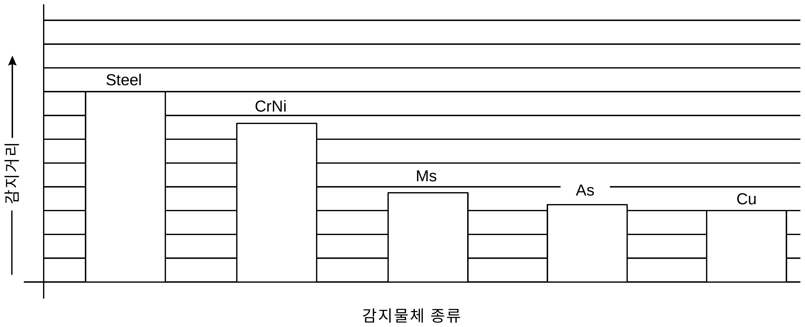
그림1-15유도형 센서 감지거리
유도형 센서의 또다른 특징은 코일 성분에 의한 전자계를 형성하는 것이므로 그 구성에 있어 L의 값을 유지하기 위한 코일의 사용으로 소형화가 곤란하다는 점을 들 수 있다. 또한 유도형 센서는 전압 또는 전류를 감지하는 물체나 감지거리에 따라 아날로그 형태로 출력하는 것도 있으나 대체로 산업체에서는 여기에서 다루고 있는 ON/OFF형 센서를 많이 취급하고 있으며 이때의 출력 형태는 출력신호의 증폭을 위해 사용한 트랜지스터(transistor)의 종류에 따라 P-N-P형 출력 형태를, 일본쪽에서는 N-P-N형 출력 형태를 이용하고 있다. 다음의 [그림 1-16]에 두 가지 형태의 센서 출력을 보였다.
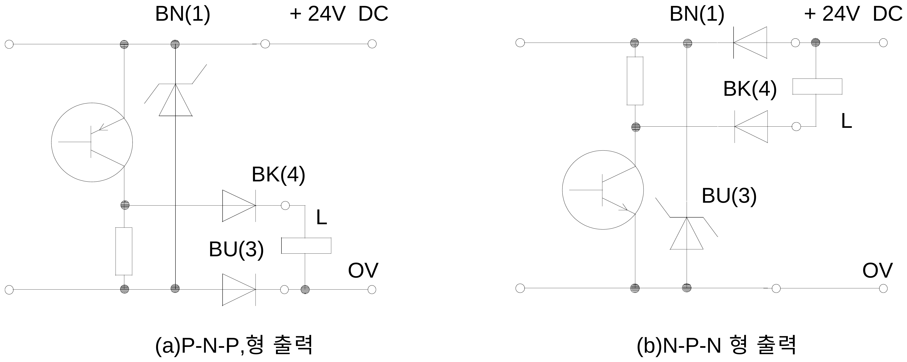
그림 1-16 센서의 출력
이러한 출력 형태를 갖는 경우의 사용 전압은 직류10∼30[V]정도이며 직접 부하를 연결할 경우 P-N-P형의 경우는 그 반대이다.
또한 유도형 센서의 경우 AC전원을 사용할 수 있는 것도 있는데 이때 사용 전압은 대략 20∼250[V]이며 2선식으로 되어 있고 마치 스위치와 같은 역할을 하므로 대부분의 센서들이 그렇듯이 허용할 수 있는 전류는 대단히 적다. 또한 부하저항이 너무 낮은 경우 동작하지 못할 우려가 있으므로 브리더저항을 병렬로 연결해야 한다. 다음의 [그림 1-17]에 유도형 센서의 응용 예를 나타냈다.
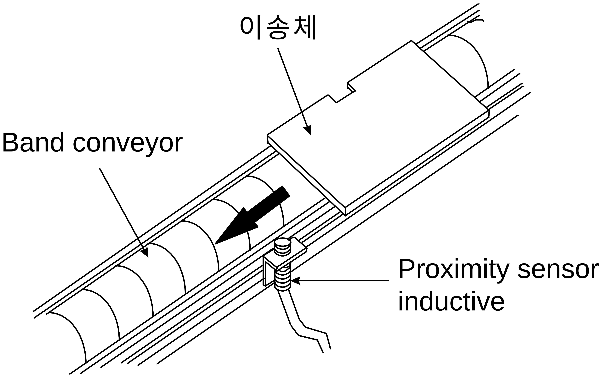
그림 1-17 유도형 센서의 응용(이송체의 검출)
07용량형 센서와 광전센서
정전 용량형 센서(capacitive sensor)라 불리기도 하며 유도형 센서의 제작원리와 거의 동일한 회로구성을 하고 있다. 다른점은 유도형 센서는 코일에서 발생시키는 전자계를 이용하지만 이것은 전극판에서 고주파 전계를 발생시켜 물체의 접근에 따라 물체표면과 검출 전극판 표면에서 분극현상이 일어나 정전용량이 증가되어 발진조건이 향상되면 이로 인하여 발진 진폭이 증가되어 출력이 나오도록 되어 있다.
또한 유도형 센서는 와전류 형성을 위한 금속물체만을 검출할 수 있는데 비해 용량형 센서는 분극현상을 이용하므로 비금속 물질도 검출이 가능하다. 감지물체의 종류에 따라 그 반응이 매우 다르게 나타날 수 있는데 이는 먼지나 습기와 같은 주변 조건의 변화에 대해 오동작을 할 경우도 있음을 의미한다. 특히 수분에 대하여는 민감하게 반응하므로 옥외 설치시에는 눈, 비, 이슬 등으로부터 보호할 필요가 있다. 다음의 [그림1-18]은 용량형 센서의 구성을 나타냈다.
용량형 센서는 유도형 센서와 달리 검출전극판을 분리하지 못하므로 모두 일체형으로 되어 있으며 일반적으로 팽행판의 한쪽은 감지물체가 되며 이때 검출 전극판과 감지물체 사이의 정전용량은 평행판 콘텐서의 경우와 같이 다음 식으로 나타낼 수 있다.
즉,여기서 S:센서 표면적
C = εSdd:감지거리
ε(유전율):
ε0·εs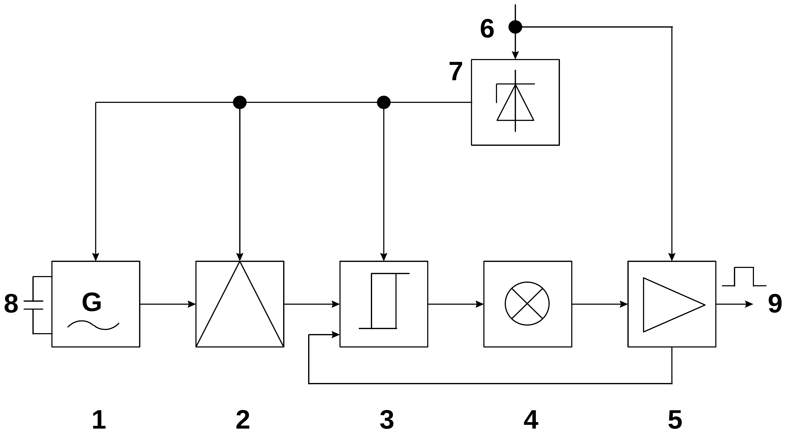
그림 1.18 용향형 센서의 구성
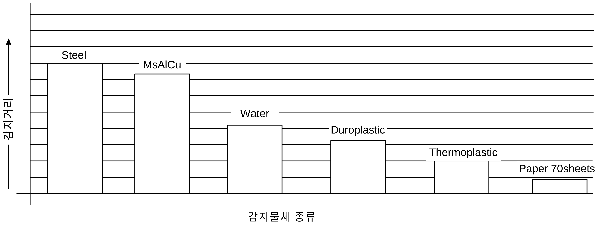
따라서 용향형 센서의 발진은 R.C에 의해 이루어지는데 이 중 C의 값이 감지거리, 물체 또는 센서의 크기, 감지 물체의 유전율 등에 따라 변함을 알 수 있다. 이 중 영향을 많이 미치는 것은 감지거리 안에 있는 물체의 유전율인데 물이나 시멘트 등은 매우 높은 유전율을 가지고 있는 물체이며 상대적으로 고무나 종이 등의 유전율은 작은 편이다. 또한 플라스틱 또는 스치로폴 등도 작은 유전율을 갖고 있는데 이들의 경우는 상당한 두께를 형성했을 때에만 짧은 거리에서 용량형 센서에 검출될 수 있다.
그림 1-19 용량형 센서 감지거리
한편 물의 경우는 유전율이 높으므로 이를 적극적으로 이용한다면 아날로그 출력의 용량형 센서를 이용하여 물체의 수분 함유율도 검출할 수 있으며 일반적인 ON/OFF형 출력 형태의 용량형 센서로도 다른 종류의 센서로는 불가능한 볼펜 속의 잉크주입 여부를 뚜겅을 열어 써보지 않고도 확인하는 용도 특별한 적용이 가능한 특징을 지나고 있다. 다음의 [그림 1-19]에 용량형 센서의 검출 물체에 따른 감지거리를 보였다 대체로 용량형 센서의 감지거리는 8∼20[mm]로 짧다.
용량형 센서의 검출 감도는 비교적 높지만 전극 면적이 작으면 정전 용량 C가 작으므로 측정오차가 크게 될 수 있으며 반대로 전극 면적이 크면 그만큼 분해능력이 저하될 수 있다.
다음의 [그림 1-20]에 정전 용량형 센서의 적용 예를 나타내었다.
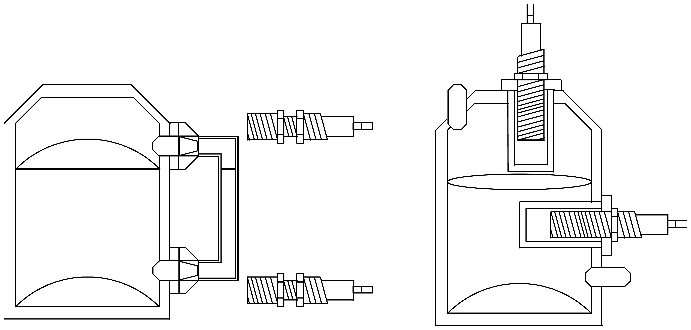
이외에도 동축 케이블 역시 평행판을 감은 것이기 때문에 이러한 형태를 욕조 등에 넣어 수의 검출을 위한 레벨 센서로도 이용할 수 있다.
그림 1-20 용량형 센서의 응용(수의 검출)
3 광센서
광센서란 빛 자체를 정량적으로 검출하기 보다는 빛을 이용하여 물체의 유무를 검출하거나, 속도나 위치의 결정에 응용되기도 하며, 레벨 검출, 특정 표시의 식별 등을 하는 곳에 많이 이용되고 있으며 포토 센서(photo sensor) 또는 광학적 센서(optical sensor)라고도 불리운다.
일반적으로 광센서는 자외광에서 적외광까지 넓은 영역에 걸쳐 광에너지를 검출할 수 있으며 광에너지를 전기적으로 변환하는 것에 의해 광기전력 효과형, 광도전 효과형, 광전자 방출형으로 나누기도 한다. 광도전 효과형 센서는 카메라 조도계에 오래전부터 이용되어 오던 황화커드뮴 센서(CdS)가 대표적이며 이것은 반도체에 빛이 닿으면 자유전자와 정공이 증가하고 반도체의 저항 변화에 의해 광량에 비례한 전류가 증가하는 광도전 효과를 이용한 것이다.
또한 광기전력 효과형 센서는 P-N접합부에 발생하는 광기전력 효과를 이용한 것으로 포토 다이오드, 포토 트랜지스터 등이 여기에 속하며 입사광을 유효하게 이용하기 위하여 표면에 반사 방지층을 설치히고 있다. 한편 미약한광을 검출할 수 있으며 응답속도가 빨라 정밀 광계측 기기에 응용되는 광전자 증배관과 같은 광전자 방출형 센서가 있으나 여기서는 산업체에서 많이 적용되는 자동화 기기용 물체 감지 및 검출용 광센서에 대하여 설명하려고 한다.
광센서는 응용분야가 넓은 만큼 종류도 여러 가지가 있는데 크게는 투광부(sender or emitter)와 수광부 (receiver)의 구성 여부에 따라 일체형과 분리형으로 나눌수 있으며 이중 일체형은 직접 반사형과 거울 반사형 두 가지로 구별할 수 있어 광센서는 크게 3종류로 대별할 수 있다.
1-1. 분리형(투과형;Through Beam)
이것은 [그림 1-21]에 표시된 것처럼 빛
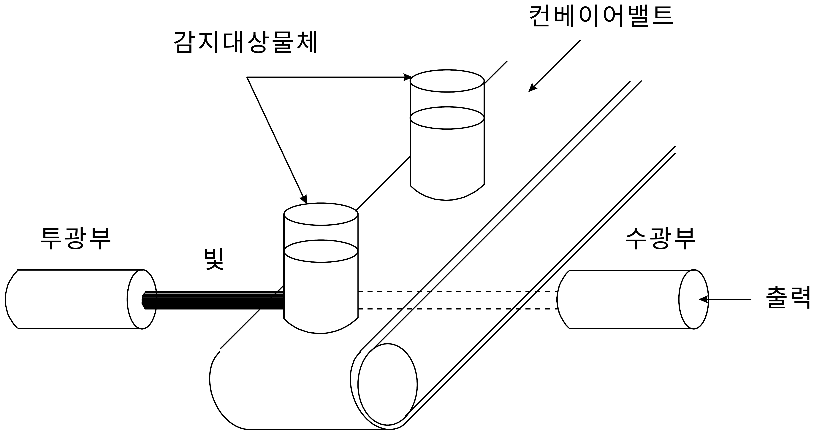
을 내보내는 투광부와 빛을 받아 들이는 수
광부가 서로 다른 몸체로 구성되어 있는 것
으로 투광부와 수광부가 서로 마주한 상태
에서 광축을 맞추어 놓고 이 사이를 물체가
통과함에 따라 빛의 차단과 전달이 이루어
지게 하여 출력신호를 만들어내는 센서이다
이러한 형태의 센서는 투명한 물체의 검
출은 곤란하며 여러 개의 센서를 상하에 수
직적으로 배치되어 사용할 때는 빛의 확산
에 의한 오류를 가져올 수 있으므로 유의하
여야 한다.그림 1-21 투광형 센서
1-2. 직접 반사형(확산형;Diffusion)
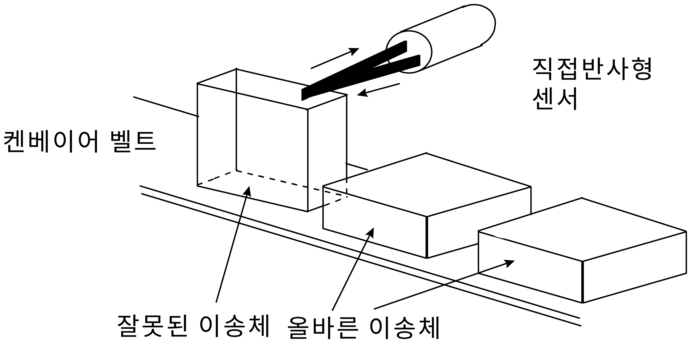
분리형 센서와 달리 직접 반사형 센서는 투·수광부가 한 몸체에 들어 있는 형태의 센서로 이것은 한 방향으로만 검출거리가 결정되어지는 특징이 있으며 투광부에서 나온 빛이 대상물체 표면에서 반사되어 수광부에 전달 됨으로써 물체의 유무를 검출해 내는 방식으로 수광부에 반사된 빛이 들어오는 경우, 즉 밝아질 때 물체가 있다고 판단함으로 라이트 온(light on)형태라 부르며[그림1-22]은 그 사용예이다.
직접 반사형 센서는 광축을 일치시켜 일정
한 간격을 유지해야 하는 투과형이나 거울
반사형 센서에 비해 번거롭지는 않으나 감지
대상의 물체가 흑색일 경우에는 검출할 수
없으므로 유의하여야 한다.
일반적으로 직접 반사형 센서의 감지거리
는 다른 광센서에 비하여 짧은 편이나 최근
에는 수미터(m) 정도까지 검출할 수 있는
것도 있으며 광파이버를 이용하여 그 응용이
더욱 다양해지게 되었다.그림 1-22 직집 반사형
1-3. 거울 반사형(Retro-Reflection)
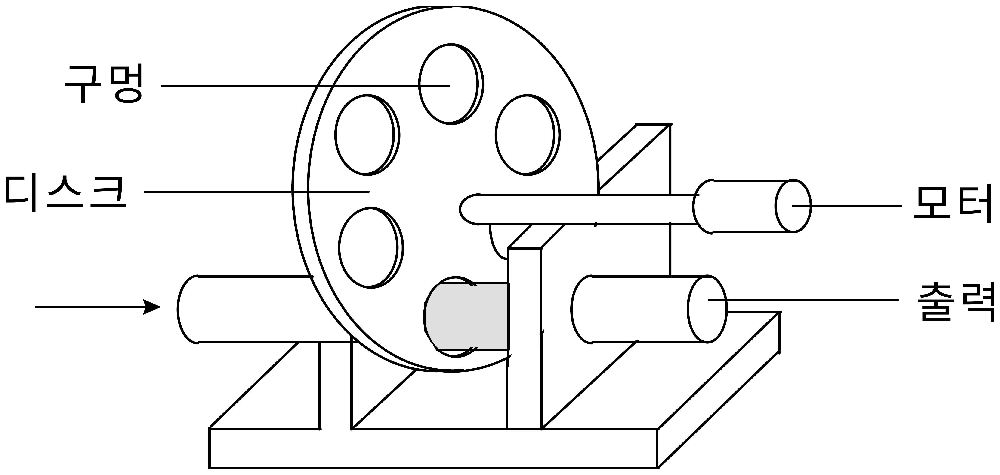
거울 반사형 센서 역시 투·수광부가 하나의 몸체에 있는 일체형 센서로 투광부로부터 방사되는 빛을 수광부로 되돌리기 위한 거울과 일정한 거리내에 위치한 센서 사이에 대상물체의 존재 여부에 따라 출력을 내보내는 것으로 투과형 센서처럼 광축을 맞추어야 하지만 일반적으로 사용하는 거울이 프리즘 효과가 있는 것을 사용하므로 어느 정도 광 축이 벗어나도 안정한 상태로 작동할 수 있다.
[그림 1-23]은 거울 반사형 센서를 나타내
었다. 대체로 감지거리는 길며 주변광에 대해
서 영향을 받을 경우 필터 등을 조합하여 특
정한 신호 즉, 투광부에서 보내온 신호에 대
하여만 정확히 반응할 수 있도록 구성되기도
하지만 감지물체의 표면광택이 너무 좋은 경
우, 처리가 곤란한 경우가 발생하기도
한다.그림 1-23 거울 반사형
이외에도 물체를 검출하는데 투광부 즉, 광원이 없이 수광부 만으로 동작하는 수동형 센서인 초전센서도 광센서의 영역인 물체에서 발열되는 적외선을 검출하는 것이므로 광센서로 분류할 수 있다. 또한 물체 유무의 검출이나 회전체의 속도 검출 및 위치 판단용으로 흔히 사용하고 있는 포토 커플러(photo coupler)는 발광 다이오드(LED;Lighted Emitting Diode)를 발광부에 사용하고 수광부에 포토 다이오드를 사용한 일명 복합형 광센서이다.
이것은 광학적으로 연결되어 있지만 전기적으로 절연되어 있으며 반도체 부품들의 기술 향상에 의해 고성능화, 저가격화가 실현되어 산업체의 많은 분야에서 이용하고 있으며 빛의 전달 통로가 노출되지 않고 패키지내에 있는 포토 아이솔레이터(photo isolator)와 광로가 노출 되어 있는 포토 인터럽터(photo interrupter)의 두 종류가 있다.
(1) 포토 인터럽터(photo interrupter)
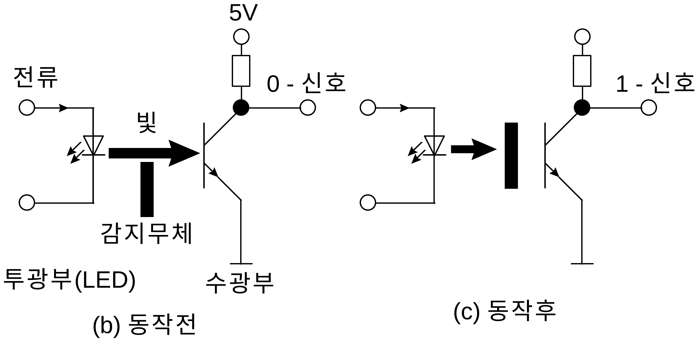
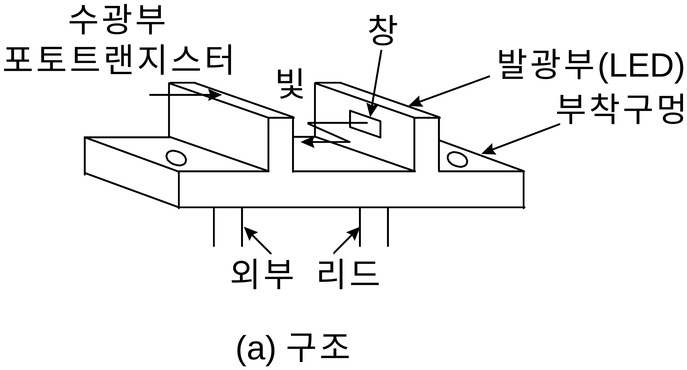
그림 1-24포토 인터럽터의 구조와 동작
투과형 센서처럼 발광부와 수광부가 서로 마주보게 배치 되어 있어 이 사이에 물체가 들어 가면 빛이 차단되어 수광부의 광전류가 차단되도록 하여 출력을 내보내는 센서이다. [그림 1-24]는 포토 인터럽터의 구조와 동작 상태를 나타내었다.
발광부의 광원은 적외광이 일반적이지만 가시광 영역의 발광 다이오드가 사용되는 경우도 있는데 이때는 빛이 눈에 보이므로 센서 동작 상태를 쉽게 체크할 수 있는 이점이 있다.
이러한 포토 인터럽터는 회전속도의 제어, 위치제어, 계수 등 그 응용분야를 점차 넓혀가고 있다. 그 이유는 고속동작이 가능하며, 소형화·경량화가 용이하고, 높은 정밀도, 우수성, 신뢰성 등을 꼽을 수 있는데 [그림 1-25]은 포토 인터럽터의 응용예이다.
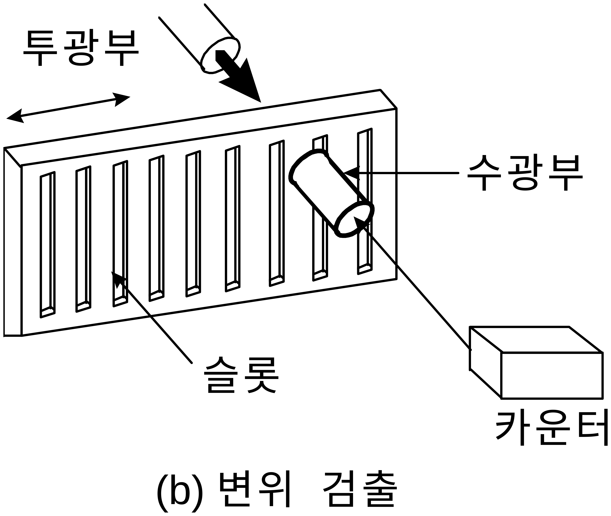
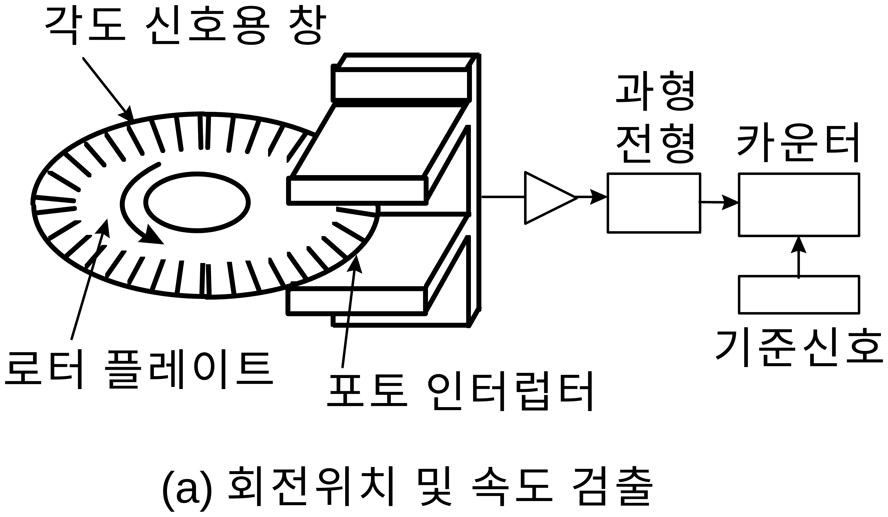
그림 1-25 포토 인터럽터의 응용
또한 포토 인터럽터는 투과형과 반사형으로 구분할 수 있으며 그 응용도 VTR, 레코드 플레이어 등의 가전기기뿐 아니라 복사기, 프린터 등의 사무용기기 그리고 자동 판매기, 자동차 태코미터 등의 민생용기기에서도 산업용 기기 못지않게 응용이 되고 있다.
(2)포토 아이솔레이터(Photo lsolator)
발광 소자로는 Si도핑의 GaAs적외 발광 다이오드가 많이 사용되며, 수광 소자로는 Si포토 트랜지스터가 가장 많이 사용되고 있다. [그림 1-26]은 포토 아이솔레이터의 구조이며 그림과 같이 포토 아이솔레이터는 발광부와 수광부를 서로 마주보게 위치 시킨 후 그 사이를 투명한 수지로 채우고 그 주변부는 불투명 수지로 감싼 구조를 한 것이 일반적이다.
출력신호를 크게 요구할 경우에는 달링턴 접속의 포토 트랜지스터를 사용한 것을 찾으면 가능하고 최근에는 수광부에 포토트랜지스터와 증폭회로를 일체화한 IC화 광센서가 출현하여 그 성능을 더욱 향상 시켰다.
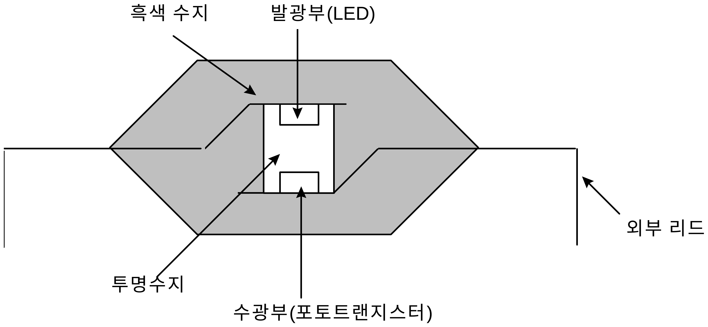
그림 1-26 포토 아이솔레이터 구조
이러한 포토 아이솔레이터를 이용할 경우 장치사이의 정보 전달에 이용되는 회로내에 입출력 단자의 접지에 대한 배려가 불필요하므로 전자회로 구성이 매우 간단해 질 수 있는 장점이 있다. 또한 수명이 길고 다른 반도체 소자와 동일한 구동 전원을 사용할 수 있는 것도 장점이다.
이상과 같이 광센서는 그 종류도 매우 다양하며 그 응용도 많은 것을 알 수 있는데 몇가지 특성을 요약하면 비접촉식으로 거의 모든 물체를 먼 거리에서도 빠른 응답속도로 검출할 수 있으며 진동 또는 자기의 영향이 적고, 광파이버 이용시 접근하기 어려운 위치나 미세한 물체도 분해능력이 높게 검출할 수 있다. 그러나 광센서는 발광부와 수광부 등에 유리나 렌즈 등이 사용되는 경우가 많은데 기름 또는 오염된 먼지 등에 의해 이들의 표면이 10[%]만 흐려져도 그 감도가 약 1/3로 떨어질 수 있으며 강한 외부로부터의 광에 의하여 오동작하는 경우도 있음을 알아야 한다.
08리드 스위치
일반적으로 측정 대상으로부터의 물리량 변화를 전기적으로 변환하거나 비접촉식으로 물체의 유무를 검출하는 것을 센서라 한다. 리드 스위치(reed switch)는 물체에 직접 접촉하지 않고 그 위치를 검출하여 전기적인 신호를 발생시키는 것으로 센서에 속한다고 말하며 근접 스위치라고도 한다.
물론 근접 스위치에는 리드 스위치와 같은 자기식 이외의 무접촉 스위치도 포함된다. 원래 리드 스위치란 가는 접점이라는 의미를 가진 것으로 전화 교환기용의 고신뢰도 스위치로 개발되었으나 최근에는 자석과 조합한 자기센서로 광범위하게 응용되고 있다.
특히 생산공장 라인에서 응용되는 자동화 시스템의 실린더 본체에 직접 부착되어 사용하므로 공간적으로 차지하는 부분을 줄일 수 있으며 동작을 위한 별도의 전원을 필요로 하지 않으므로 손쉬운 회로 구성이 가능하여 많이 응용되고 있다.
리드 스위치의 기본 구조는 백금, 금 로듐 등의 귀금속의 접점도금을 한 자성체 리드편을 적당히 접점 간격을 유지하도록 하고, 유리관 중에 질소와 수소 혼합 가스와 같은 불활성 가스와 함께 봉입한 것으로 접점 형식에 따라 [그림1-27]와 같이 여러 형태로 나타낼 수 있다.
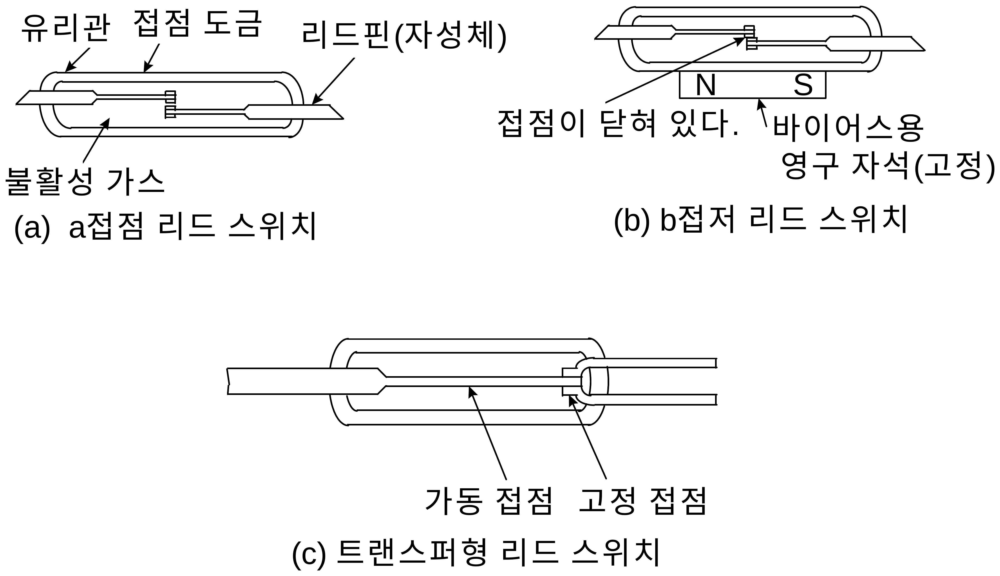
그림 1-27 각종 리드 스위치의 구조
리드 스위치는 일반적으로 정상 상태에서는 접점의 탄성에 의해 열려져 있는 a접점(arbeit contact;normally open)형태이나, [그림1-32] (b)처럼 바이어스용 영구자석을 부가해서 정상 상태에서 접점이 닫혀 있는 b접점(break contact;normally close)형태와 [그림1-32]의 (c)처럼 고정 접점을 2개 설치해 서로 상이한 동작을 일으킬 수 있는 c접점으로써의 역할도 한다. 즉, 리드 스위치는 동작계와 전기회로가 동축상에 구성된 구조로 되어 있다. 리드 스위치의 동작 원리는 구조에서 추측할 수 있듯이 자석이 리드 스위치에 접근하면 연질 강자성재료의 리드편은 자계의 방향에 따라 자화되고 이 리드편이 N극, S극으로 유기됨에 따라 접점부가 서로 끌어 당기게 되는 것이다. 이 자기적 흡인력이 리드의 기계적 탄성보다 크면 접점을 닫아 전류를 흐를 수 있게 하고 외부 자계가 없어지면 자기를 띠고 있지 않던 최초의 상태로 접점의 탄성에 의해 돌아가게 되므로 전기회로는 차단된다.
이러한 리드 스위치는 문과 문틀에 자석과 스위치를 조합하여 방범용 제어기에 응용되거나 자동화 시스템의 실린더 위치감지에 응용될 뿐 아니라 자동차, 가정용 전기기기, 계측기기 등에 널리 사용되고 있으며 최근에는 비교적 가벼운 부하의 개폐로부터 중부하의 개폐쪽으로 용도가 신장되고 있다.
이와 같은 리드 스위치는 다음과 같은 특성을 갖고 있다.
①접점부가 완전히 밀폐되어 있으므로 가스나 액체중, 고온 고습 환경에서 안정된 동작을 한다.
②스위칭 시간이 짧다.(1[ms]이내)
③반복 정밀도가 높다. (±0.2[mm])
④사용 온도 범위가 넓다. (-270∼150[。C]
⑤내전압 특성이 우수하다. (10[KV]이상)
⑥동작 수명이 길다.
⑦소형, 경량, 저가격이다.
⑧회로 구성이 간다하다.
이상의 특성중 리드 스위치는 자석과 조합하여 사용되므로 어떠한 자석을 사용하는 지를 충분히 검토하여야 하며 특히 사용온도 범위는 조합 사용되는 자석의 특성에 따라 크게 바뀌게 된다. 왜냐 하면 자석이란 퀴리(curie)온도 이상이 되면 자석의 성질을 읽게 되어 접점의 자화를 일으키지 못하기 때문이다. 대체로 알니코계나 회토류계의 자석이 페라이트계 자석보다 퀴리점이 높다.
예를 들면 알니코계의 자석은 800[。C ]전후의 퀴리온도를 나타내며, 회토류계는 700∼850[。C ] 정도의 퀴리온도를 나타내고, 페라이트계의 자석은450[。C ]정도의 퀴리온도를 갖고 있다. 이러한 점이 고려되어 사용해야 하며 이외에도 고려해야 할 몇 가지 유의사항이 있다.
첫째로 유리관을 하우징재로 사용하고 있으므로 강한 외부 응력 및 과도한 충격을 피하여야 한다. 둘째 부하조건에 따라 수명이 크게 좌우되므로 사용조건에 맞춘 검토가 필요하다. 이는 예를 들어 부하가 저항성이면 과도한 전류가 흐를 수 있는 경우에 대하여는 전류제한저항을 달아주거나, 용량성 부하라면 스위치 ON시 돌입전류가 크게 될 수 있는 것에 유의해야 하며 특히 유도성 부하의 경우 접점부의 불꽃 방지(넴가 quenching)회로를 구성해야 한다는 것을 의미한다. 또한 리드 스위치는 자극의 배치에 따라 감지 특성이 [그림 1-34]에 나타낸 것처럼 달라질 수 있다.
그림에서 보면 2개 또는 3개의 감지 특성이 자극면이 위치에 따라 나타나는데 이와 같은 신호는 히스테리시스와 함께 아주 인접한 거리에서의 연속된 리드 스위치의 사용을 허용하지 않는다. 따라서 우리는 자석의 올바른 부착에 의하여 이를 방지하여 정확한 위치를 검출하여야 한다.
09자기센서
자기센서는 자계에 관련한 물리현상이 이용된 것이로 홀소자, 홀IC, 자기저항 소자(반도체, 강자성체)등의 전기적인 양으로 변화되는 것외에도 자계를 빛이나 압력의 변화로 바꾸어 이로부터 자계를 측정하는 것 또 자계에 의해 기계적 변화를 일으켜 전기회로를 구성할 수 있는 리드 스위치 등이 포함된다.
자기센서는 광범위한 산업 분야에서 이용되고 있으며 마이크로프로세서 고성능화, 저가격화에 따라 그 사용이 더욱 늘어난 정보처리장치나 음향 등에서도 현저히 이용도가 높아 지고 있다. 여기서는 브러시리스 모터에서 무접촉식으로 정류작용을 하는데 이용되는 홀(hall)소자, 그리고 회전각도 검출을 위해 사용되는 자기저항 소자에 대하여 알아보자.
가. 홀 소자
전자기기의 소형화, 경량화를 위하여 많은 노력들이 요구되며 전자부품의 경우는 대체적으로 집적화하기 쉬워 초소형으로 제작이 가능하나 이에 비해 VTR, 레코드 플레이어 등의 가전제품 및 플로피 디스크 드라이버(FDD)와 같은 제품에서는 기계적인 움직임을 갖는 구동체인 브러시리스 모터의 소형화가 상대적으로 어려웠다. 따라서 전자기기들이 소형화, 고성능화되기 위해서는 사용되는 브러시리스 모터 등도 고기능화되어야 한다. 이를 위해 홀 소자가 자계센서로 이용되고 있다. 이외에도 홀 소자는 자속계, 전류계, 회전계, 속도계 및 전력계등에도 이용되고 있다.
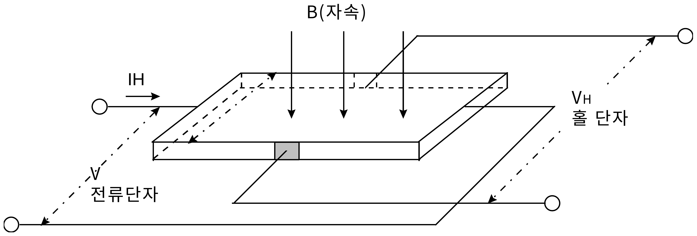
[그림 1-32]에서 볼 수 있는 것처럼 홀 소자는 반도체 소자에 리드 선이 붙어 있는 간단한 구조인데 전류단자로 표시된 것이 입력단자이며 출력단자는 홀 단자로 표시되어 있다.
입력단자에 전류 I를 흘리고 전류에
그림 1-32 홀소자의 기본구조
직각인 방향으로 센서 면에 자계B를 가하면 전류와 자계모두에 직각인 방향으로 자계와 전류의 곱에 비례하는 홀전압을 발생하는 홀 효과(hall effect)를 이용하는 것이다.
홀 소자용의 반도체 재료로는 GaAs,InSb 등이 많이 사용되며 <표 1-8>에 이들을 이용한 홀센서의 특징을 비교하였다.
구분 | GsAs | InSb |
온도 | 동작범위 넓다.(-55℃∼125℃) | 동작범위 좁다.(-20℃∼100℃) |
온도계수 | 작다.(정전류 구동시:-0.04%/℃) | 크다.(-2%/℃) ∴고온에서 열폭주 주의 |
직 선 성 | 높은 자계까지 정확히 | 높은 자계에서 포화 (수K 가우스 이상에서 직선성 떨어짐) |
출력전압 | 낮 다 | 높 다 |
기타 | 주파수 특성 우수 | 정전압 구동시 온도특성 양호 |
가격 | 양산화로 낮아짐 | 저 렴 |
표 1-8 홀센서 특성 비교
홀센서에 관련된 수식에는 다음과 같은 것들이 있다.
홀전압 VH = RHBJbRH : 홀정수(1/u)
ρ= v : 체적 전하밀도(n·e)
1ne ρJ : 대류 전류밀도(vV)
ρn : 전자농도, b : 시료의 폭
상기식에서 보듯이 출력전압은 자계 및 전류에도 비례하지만 홀 소자의 크기에도 영향을 받는데 대체로 수(mm) 정도의 크기를 갖고 있다. 또한 홀 소자의 구동 방법은 정전류구등의 정전압구동으로 나눌 수 있는데 홀 전압은 정전류구동의 경우 반도체 기판의 전자 농도에 의 존하고 정전압구동의 경우 전자 이동도에 의존하므로 홀 소자의 감도나 온도특성이 구동방식에 따라 달라진다.
일반적으로 정전류구동은 온도계수가 작고(GaAs 경우), 직선성이 양호하며, 불평형 전압(자속밀도 0일때 출력전압)이 온도에 따른 변화가 크며, 적감도(자계 1[kg], 전류 1[mA]인가시
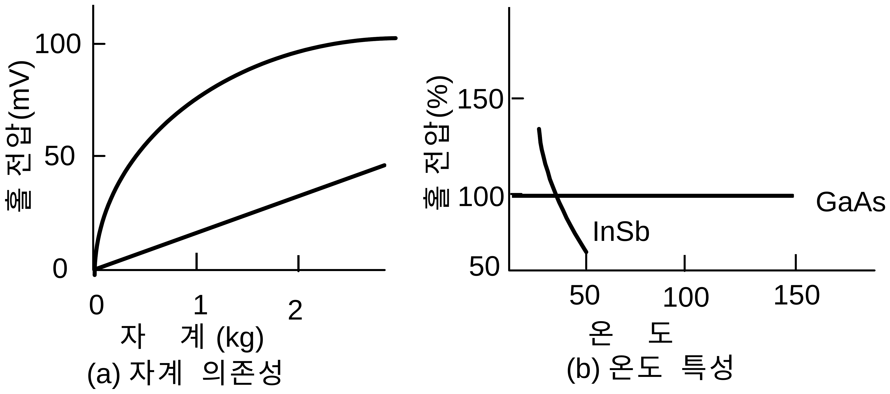
홀전압;이 값이 클수록 고감도
그림 1-33 홀 소자의 특성
이다) 편차의 영향이 크게 된다. 만일 정전압 구동방식으로 한다면 이와 반대되는 특성을 갖게 되는데 정전압구동시는 InSb홀 소자의 경우 온도계수가 작아진다. (GaAs홀 소자 온도계수는 커짐)
한편 적감도라는 것이 구동방식에도 영향을 받지만 사실 이것은 홀 소자의 두께는 수(㎛)이므로 오차의 발생은 어쩌면 당연한 것이다. [그림 1-33]에 전류구동시 자계와 온도에 따른 홀전압 특성을 나타냈다. 한편 반도체 홀 소자의 자계 감도가 1[kg](1000가우스)당 10∼20[mV]정도로 다른 재료를 사용한 것에 비해 낮다는 결점을 보완하기 위해 IC기술을 이용해 신호처리회로를 센서와 일체화시킨 다시 말해 홀 소자와 증폭기를 하나로 집적화한 반도체 홀 IC(리니어형, ON/OFF형)도 최근에 많이 응용되고 있다.
나. 자기저항 소자
수도 미터는 물의 사용에 따라 회전하는 날개 바퀴와 기어 부분 및 지침으로 구성되어 있으므로 미소 유량에서의 특성이 나쁘고 기어의 마모나 회전 불량 등의 결점이 있다. 이러한 단점을 보완하고 가입 전화회선을 이용하여 자동 검침을 할 수도 있는 전자화된 개량기에 이용되고 있는 것이 자기저항 소자인데 이는 반도체에 흐르는 전류와 자계사이의 관계로 앞에서 언급한 홀 효과(전압 발생)이외의 또 다른 효과인 가해진 자계에 의하여 전류단자간의 전기저항이 변하는 자기저항 효과를 이용한 것이다.
이러한 성질을 가지고 있는 소자(InSb;무자계시와 비교하여 자계 인가시 감도가 크므로 많이 사용함)에 전류를 흘리면 [그림 1-34]에 나타낸 것과 같은 전류 분포를 갖지만 자계를 소자면에 직각으로 인가하면 홀 효과에 의하여 전류 경로는 자계와 홀각도 θ의 경사를 가지게 되므로 길어지게 된다. 따라서 저항이 증가하게 된다.
이와 같은 자기저항 효과는 소자의 형상에 따라서도 차이가 있는데 사각형 소자의 경우 전극간의 거리가 짧을수록 저항 증가율이 크며 자기저항 효과가 가장 현저한 것은 원형 소자로 중심부와 외부 둘레에 전극을 가진 콜비노 소자라 불리우는 것이다.
반도체 자기저항 소자는 홀 소자가
자계의 극성에도 영향을 받는 것과 effl 자계의 강도에만 따라 저항값이 변화하는데 대체로 1000가우스 이하의 자계에서는 제곱특성을 가지며 그 이상의 자계에서는 직선특성의 저항 변화를 갖는다. 일반적으로 자기저항 소자는 큰 감도(무자계시에 비해 자계인가시 변화가 크다 : 3[kg]시 약3배 정도)를 가지나 실용 소자에서는 저항값을 조정하여 외부 변화율을 높이기 위해 많은 자기저항 소자를 직결로 연결하여 시판하고 있다.
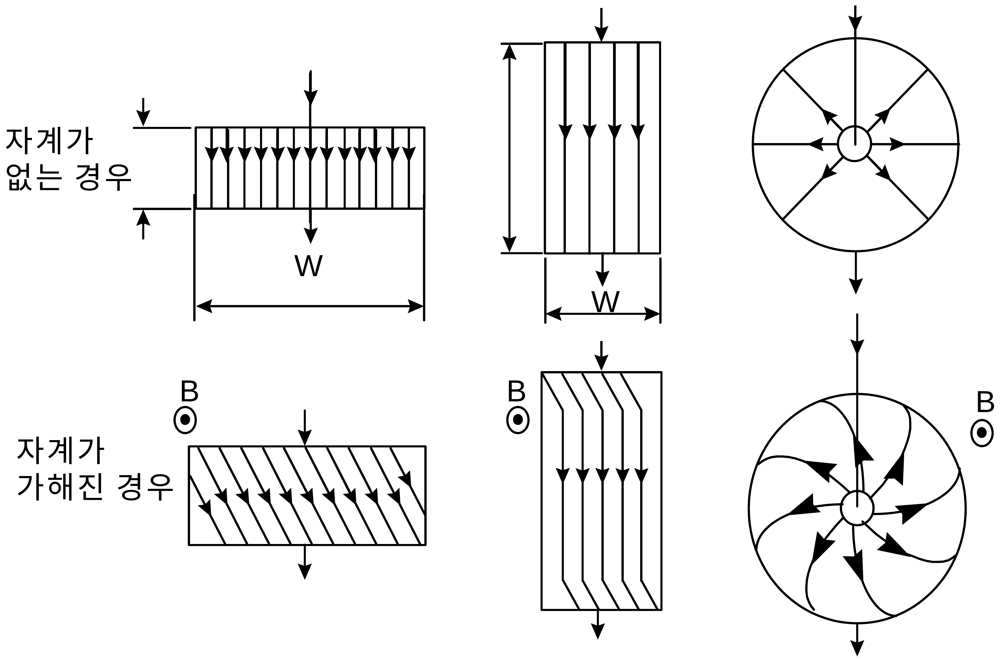
I
I
I
I
I
ℓ
ℓ
I
[그림 1-35]에 시판되고 있는 자기저항 소자의 전체적인 형상과 자계를 검지하는 자기저항 소자를 직렬로 접속한 패턴을 나타냈다. 다음에 자기저항 소자의 특성을 알아보자.
(a) ℓ/W<1 (b) ℓ/W>1 (c) 콜비노 소자
그림 1-34 소자내의 전류분포
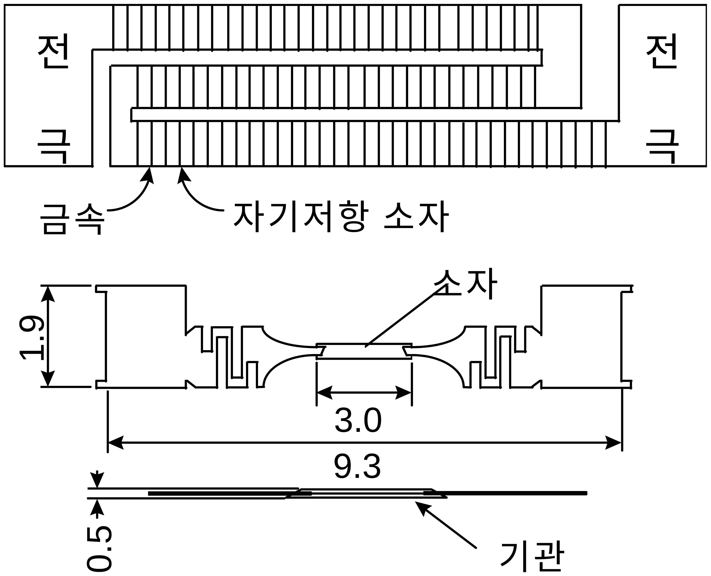
① 2단자 소자이다.(홀센서는 4단자)
② 저임피던스이다.(수백()정도)
Ω③ 저항 변화율이 크다.
그림 1-35 자기저항 소자의 구조와 현상
④ 10[kg]이상에서도 측정 가능(포화점 높음)하다.
⑤ 저잡음이다.
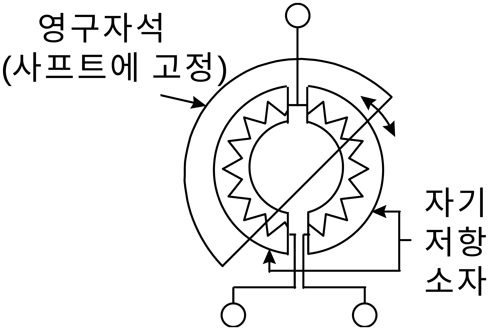
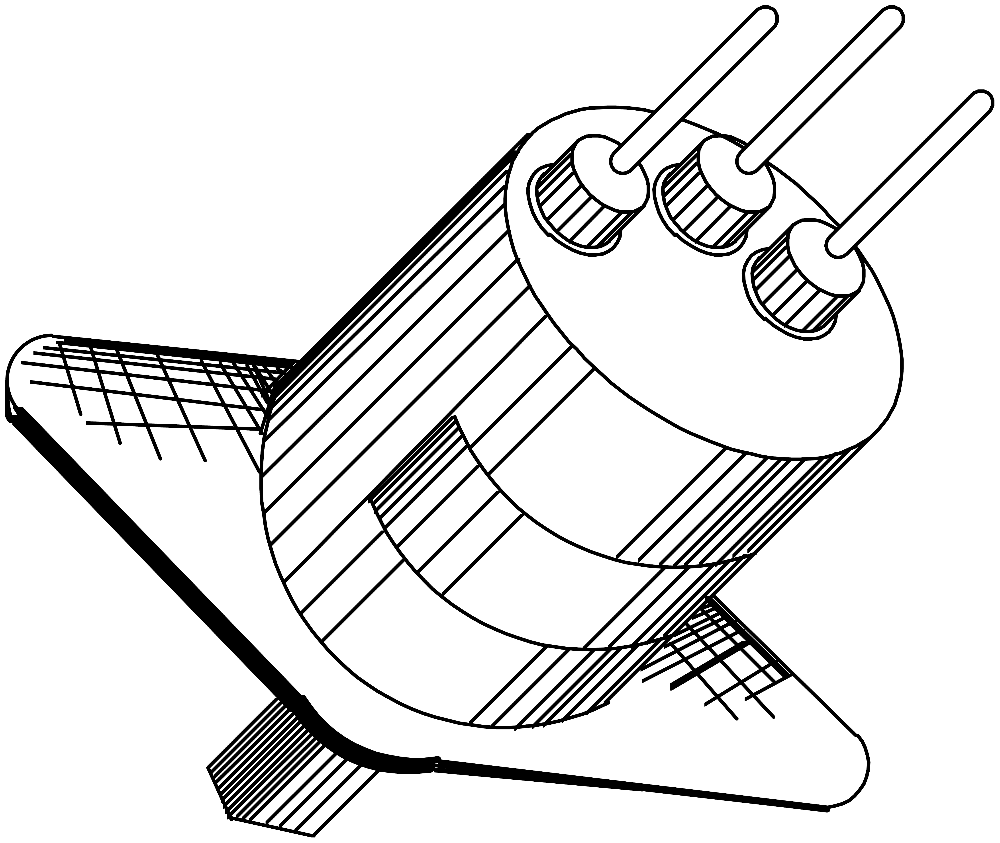
그림 1-36 각도센서 외형과 내부등가회로
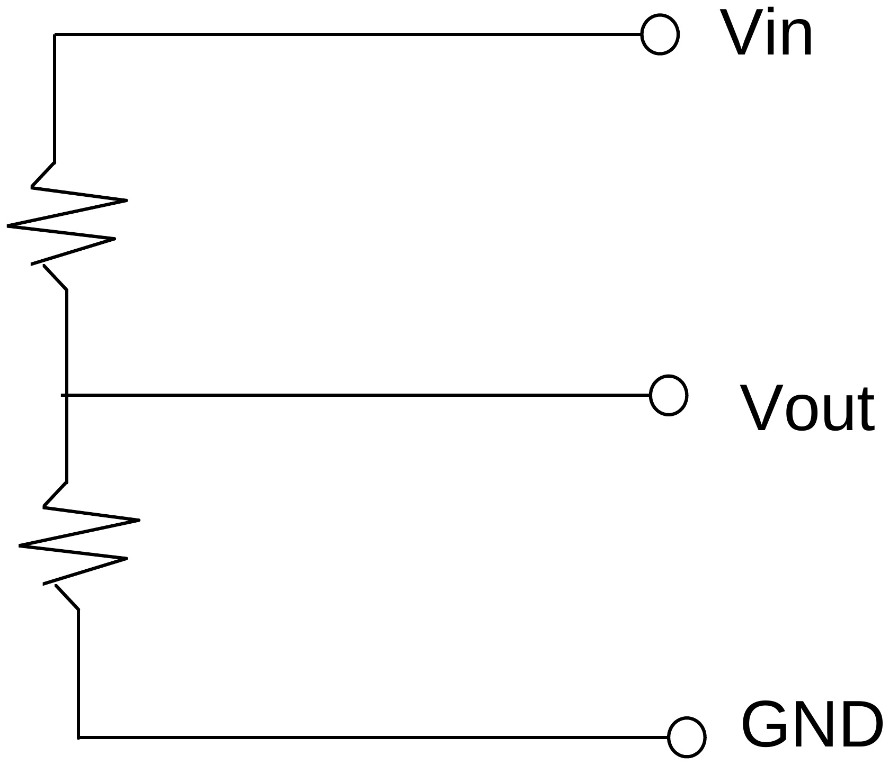
[그림 1-36]에는 비접촉식으로 각도를 측정할 수 있는 자기저항 소자를 이용한 센서의 외형과 그 구성품중 회전축에 부착된 자석과 이의 위치르 검출하기 위해 미소한 거리(약 0.2[mm])를 두고 자석과 떨어져 있는 2개의 자기저항 소자의 등가회로를 보였다. 정하는 방식은 영구자석을 이동하여 고정된 자기저항 소자의 출력을 꺼내는 방식과 반대로 자기저항 소자를 이동 하고 자석을 고정시키는 방식, 또는 자석과 소자는 밀착 고정하고 근접한 자성체의 요크(yoke)를 이동시켜 자계를 변화시키는 방식이 있는데 어떠한 경우라도 소자에 근접한 자석이나 요크는 소자와 비접촉식으로 회전 위치를 전기신호로 변환하다.
R1
R2
그림 1-36 각도센서 외형과 내부등가회로
이제 회전축에 연결된 자석을 회전시킴 으로서 고정된 자기저항 소자로부터 변화된 출력을 꺼내는 방식을 가지고 비접촉식 각도센서의 특성을 살펴보자. 비접촉식 각도센서의 내부회로는 [그림 2-74]에 나타내었듯이 전압 분배기와 같은 구조로 생각할수 있겠다. 알
있는 바와 같이 전압 분배기의 출력전압은 구성된 두 개의 저항값에 따라 공급된 전압을 0볼트(volt)에서 최대 공급전압까지 다음식에 의해 발생시킬 수 있다.
Vout = R2R1 + R2 Vin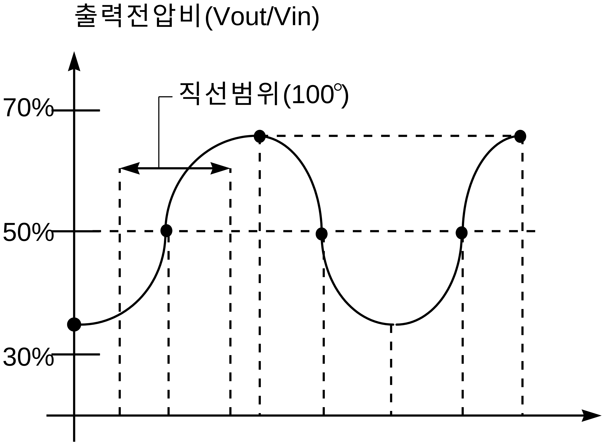
그러나 실제의 비접촉식 센서를 구성하는 소자들의 저항은 얼마간의 값을 무자계시에도 가지고 있으므로 출력전압이 완벽하게 0에서 최대까지 변화하지 못한다. 이것은 곧 비접촉식 각도센서의 사용 범위가 모든 위치( 360°)에 있어 직선성을 갖지 못함을 의미한다. 다음의[그림 1-35]에서 이들의 관계를 보인다.
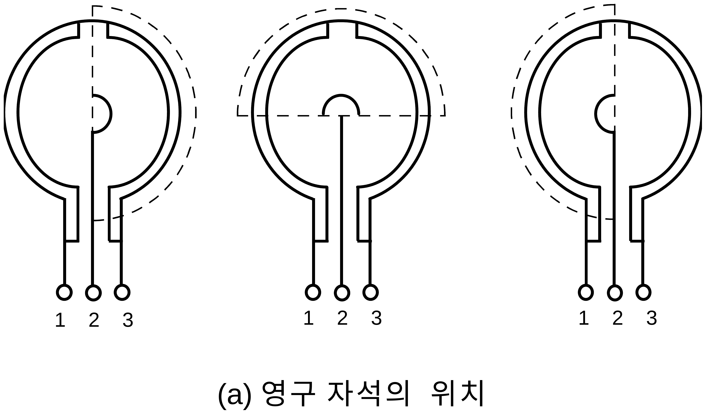
회전각
0
π
5/2π
2π
3π
(b) 위치에 따른 출력 전압
3/2π
π/2
①
②
③
그림 1-35 자석의 위치에 따른 출력 특성
[그림 1-35]의 (a)에서 점선부분이 자석을 나타내는데 ①의 위치에서는 자석이 MR2쪽에 있으므로 두 소자의 저항값은 MR1<MR2이다. 따라서 출력전압을 MR1쪽에서 인출한다면 Vout = 0.3Vin정도되며(낮다) ②의 위치에서는 자계가 MR1과 MR2에 균등이 공급되어 소자의 저항 MR1 = MR2로 되어 Vout = 0.5Vin이 된다. 마찬가지로 ③의 위치에서는 MR1>MR2로 되어 Vout = 0.7Vin 정도로 높아진다.
이처럼 축에 연결된 자석이 회전하면 정현파(사인파 : sine wave)와 비슷한 출력전압이 나오는데 이중 근사적으로 직선으로 간주할 수 있는 범위가 출력전압이 0.5Vin을 중심으로 ±50°인 부분인데, 이범위를 이용하여 각도의 검출이 가능하다. 이와 같은 비접촉식 각도센서는 습동시 노이즈가 없고 마찰부분이 없으므로 수명이 긴장점은 있으나 반면에 누설자계에 의한 완전한 무자계 구성이 어렵고 소자나 구조적인 갭(자석과 소자)등의 불균일에 의하여 출력 감도의 불균형이 생기며 무엇보다도 온도에 따른 자기저항 변화율이 균일하지 않고 저항온도 계수가 크기 때문에 출력전압이 크게 바뀔 수 있다는 것이 단점이다. 이를 위해 병렬저항이나 서미스터에 의해 온도 보상을 해주고 있다.
10초음파센서
음파란 공기중이나 수중 또는 고체내의 탄성 진동전파 즉 기계적 진동의 전달을 의미하는데 이중 초음파란 보통 인간의 귀에서 들을 수 있는 20[Hz]∼20[KHz]의 가청음보다 높은 주파수 즉 20[KHz]이상의 주파수를 가진 음파를 말하며 초음파의 응용은 초음파 세척기와 같이 에너지를 이용하는 동력적인 부분과 정보 전달자(신호)로서 이용되는 통신적 부분으로 나눌 수 있다.
각 분야에서 이용되는 초음파의 주파수는 낮게는 20[KHz]정도에서 높게는 초음파 현미경에 사용되는 2[MHz]이상까지도 포함되며 같은 초음파라도 그 파가 어떤 매질(공기, 물, 고체 등)에 존재하느냐에 따라 성질이 크게 달라지는데 물체의 유·무검출이나 특정한 물체까지의 거리 등을 측정하는데 이용되는 초음파센서는 대략 23∼25[KHz] 또는 40∼45[KHz], 수백[KHz] 정도의 주파수를 사용하고 있다. (대략 30∼300KHz)
초음파센서는 일반적으로 송신기가 수신기가 한 물체로 되어 있는 확산형(반사방식) 구조이나 송·수신기가 떨어져 있는 형태의 구조도 있는데 [그림 1-36]에 나태냈다. 직접형은 송신기와 수신기를 대향 배치하여 직접파가 있으며(신호전압 있음) 물체가 존재하지 않고 신호전압이 없으면 물체가 존재하는 것인데 이것은 광센서의 투과형과 비슷하나 광센서로는 투명한 물체검출이 불가능하나 초음파센서에서는 가능하다.
일반적으로 초음파의 발생이나 검출은 크게 전자유도현상, 자왜현상, 압전현상중 하나를 이용하는데 어느 것이든 전기에너지와 탄성에너지의 변환을 한다. 초음파센서는 전기신호를 초음파로 변환하는 송파기와 그 역변환을 하는 수파기(음향기기에서 스피커와 마이크로폰에해당)로 구성되는데 이들은 동일한 구조로 초음파의 발생과 검지가 가능하다. 초음파센서의 스위칭 주파수는 대략 1∼125[Hz] 정도이나 감지 대상 물체의 형상, 색깔, 재질이나 고체, 액체, 분말 등의 형태 또는 연기, 증기, 먼지 등이 있는 환경에 영향을 받지 않고 검출할 수 있다는 것이 장점이다.
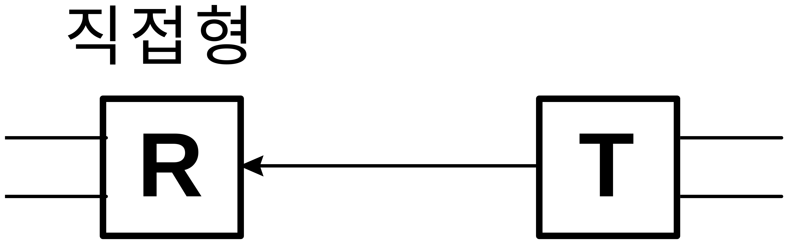
T
R
T/R
배치 방식 | 특성 |
·검지감도를 자유로이 설정할수 있어 설계가 쉽다. ·설치 장소가 2개소 필요 | |
반사방식(독립형) | ·T에서 R로 직접 들어가는데 대한 대책 필요 ·T와 R전용 센서를 사용할 수 있으며, 효율이 좋다. ·근거리(10cm 이하)인 경우가 많다. |
반사방식(겸용형) | ·송수신 전환 회로가 필요 ·근거리는 측정할 수 없다. |
그림 1-36 초음파센서의 형태
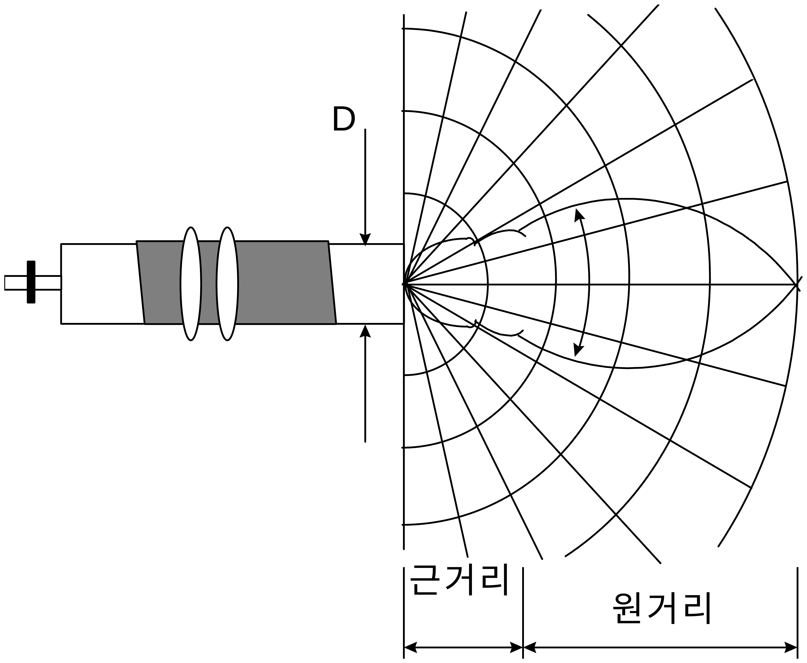
확산형 검출방식은 송신기와 수신기를 비교적 가깝게 배치할 수 있는데 이 형식은 반사파가 있을 때 물체가 존재하는 것으로 송신기와 수신기가 분리된 독립형과 1개의 초음파센서로 송수신을 행하는 겸용형이 있다. 초음파센서는 다양한 물체를 검출할 수 있다는 장점외에도 배경의 영향을 없앤다든지 옥외에 설치할 수 있다는 것과 정확한 동작 위치를 선택할 수 있다는 장점이 있는 반면에 다음과 같은 단점이 있다.
① 감지물체 표면에 경사가 있으면 곤란하다.
~D2/2
② 스위칭 주파수가 낮다.(대략 125Hz이내)
ℓ
그림 1-37 초음파 방사 특성
③ 광센서에 비해 고가이다.(대략 2배)
[그림 1-37]에 초음파센서의 지향특성을 나타
내고 있는데 다른 센서(특히 광센서)들과는 달
리 센서의 중심부쪽만 감지 특성이 좋은 것은
아니다. 또한 물체가 센서 표면에 너무 가까이
있으면 센서 출력에 오차(error)를 가져올 수
있다. 따라서 초음파센서는 아주 가까운 거리의 물체는 검출할 수 없는데 여기서 아주 가까운 거리란 D2/보다 짧은 거리를 말한다. 예를들어 송신 주파수가 200[KHz]이고 센서지름이 15[mm]라면 이때의 감지불능 거리는 약 130[mm]가 된다. 다음은 초음파 송수신을 행하는 방법에 따른 특징을 살펴보자.
λ① 압전 전동자
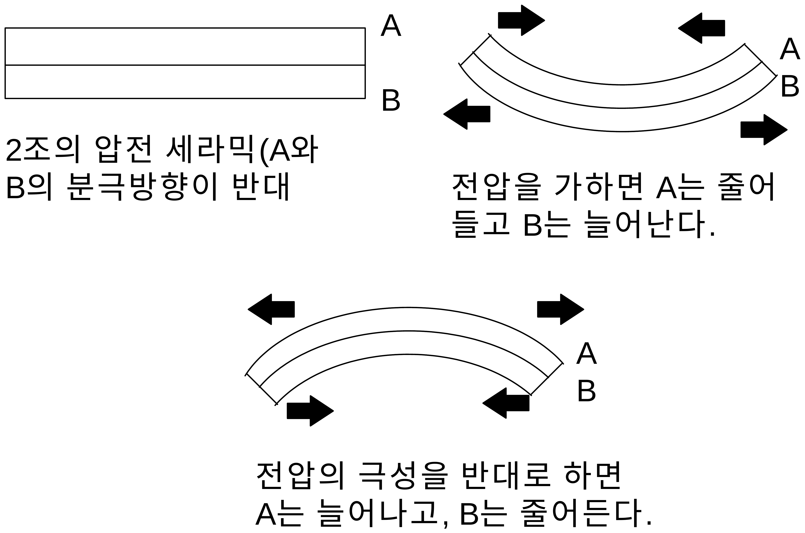
유전체 전압을 인가하면 전기 분극이 일어나는데 어느 경우에는 응력에 의해서도 전기분극을 일으킬 수 있으며 이와 같은 것을 압전 효과라 하며 반대로 전압을 가하였을 때 응력이나 왜곡이 생기는 현상을 역압전 효과라 하며 이러한 현상을 가진 물질을 압전 소자라 한다. 수정이나 로셀염의 결정, 티탄산 바륨 등과 같이 압전 효과를 이용하여 초음파를 발생시키거나 검출하는 것을 압전 진동자라 하는데 용액이나 금속내에서 MHz급의 초음파 송수신도 가능하다.
가청 주파수대의 크리스털 이어폰에 이용되던 로셀염은 감도는 좋으나 음질이나 내습성 등의 문제 때문에 다이나믹형으로 바뀌어 현재는 이용되지 않으며 않고 있다.
그림 1-38 바이모르프(bimorph)형 진동자
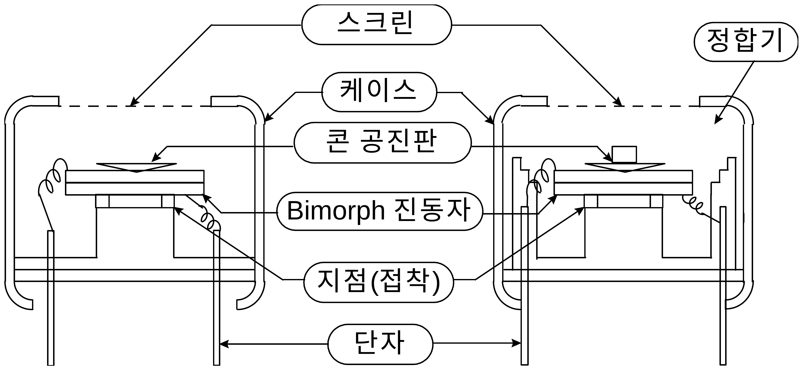
최근에 많이 사용되고 있는 초음파센서 재료는 [그림 1-38]이 나타낸 것과 같은 바이모르프(bimorph)형 진동자로서 이는 압전(piezo)효과가 있는 2개의 소자를 맞붙여 놓은 것으로 인가전압의 극성을 바꾸어 줌에 따라 진동자의 신축이 효율 좋게 반복되는 것으로 이러한 바이모르프 진동자는 출력전압이 크고 구조도 간단하며 소형이다. 또한 기계적 강도도 크고 온도특성이나 습도특성도 양호하며 가격이 저렴하므로 소형의 초음파센서에서 많이 사용되고 있다. (그림 1-42)는 바이모르프 진동자를 사용한 초음파센서의 구조를나타냈다. 이형태의 초음파센서는 대체로 중심주파수 25[KHz] 또는 40[KHz]가 표준이다.
그림 1-38 바이모르프 진동자를 이용한 초음파센서
② 자왜 진동자
강자성체에 자장을 가하면 자계 방향에 왜곡이 생기는데 이를 자왜효과라 하고 반대로 자계가 인가된 재료에 응력을 가하면 자속밀도가 변하는 현상을 역자왜 효과라 하는데 보통 양자를 총칭하여 자왜 효과라 한다. 이러한 효과를 얻도록 만들어진 것이 자왜 진동자인데 이것은 페라이트(Ni, Co, Cu, Fe 등의 금속 산화물의 혼합 분말을 압축, 성형하여 소결한 것), 알루페로( Al, Fe 합금), 니켈 등을 가공하여 코일을 감은 것이다.
그림 1-41 바이모르프(bimorph)형 진동자
(25×21×16mm)
28KHz(75×40×20mm)
[그림 1-40]에 페라이트 진동자의 형상을 나타냈는데 전류를 흘리면 재료의 물리적 성질이나 구조에 따라 정해지는 고유진동수로 공진해서 자계와 수직인 방향으로 신축, 진동하여 초음파를 발생시킨다. 특히 페라이트는 절연물이므로 고주파 자장에 대해 와전류의 발생이 적고 에너지 변환효율이 양호하므로 에너지를 필요로 하는 세척기 등에 사용되고 있다. 음향 출력은 6[W/cm2]정도이며 그 이상 필요할 때는 몇 개의 진동자를 배열하
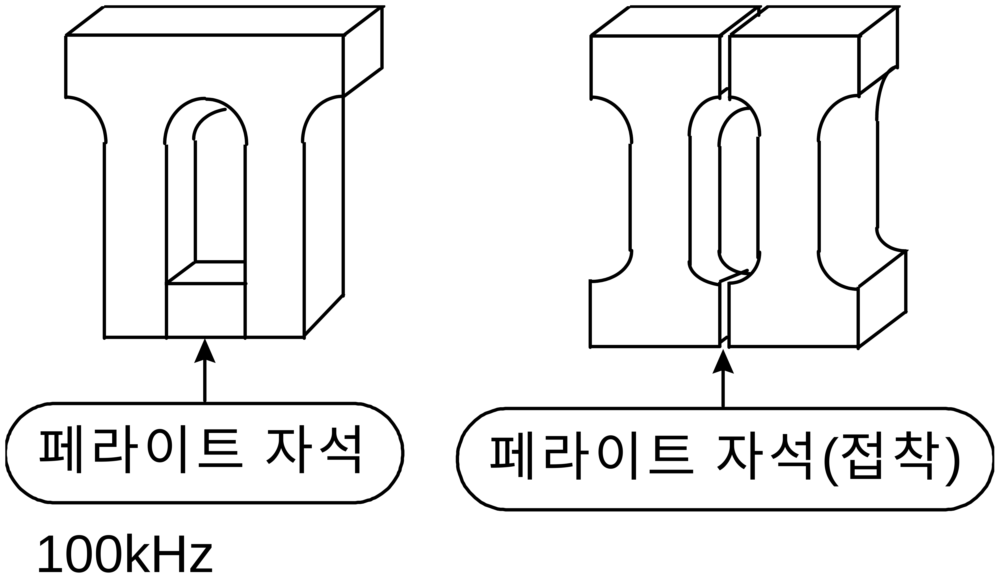
여 파를 합성하여 파워 밀도를 올려 준다. 견고하지만 외력에 대한 저항력이 약하므로 충격에 유의하여야 하며 28,100[KHz]의 진동자가 표준품으로 시판된다.
③ 전자 유도형 진동차
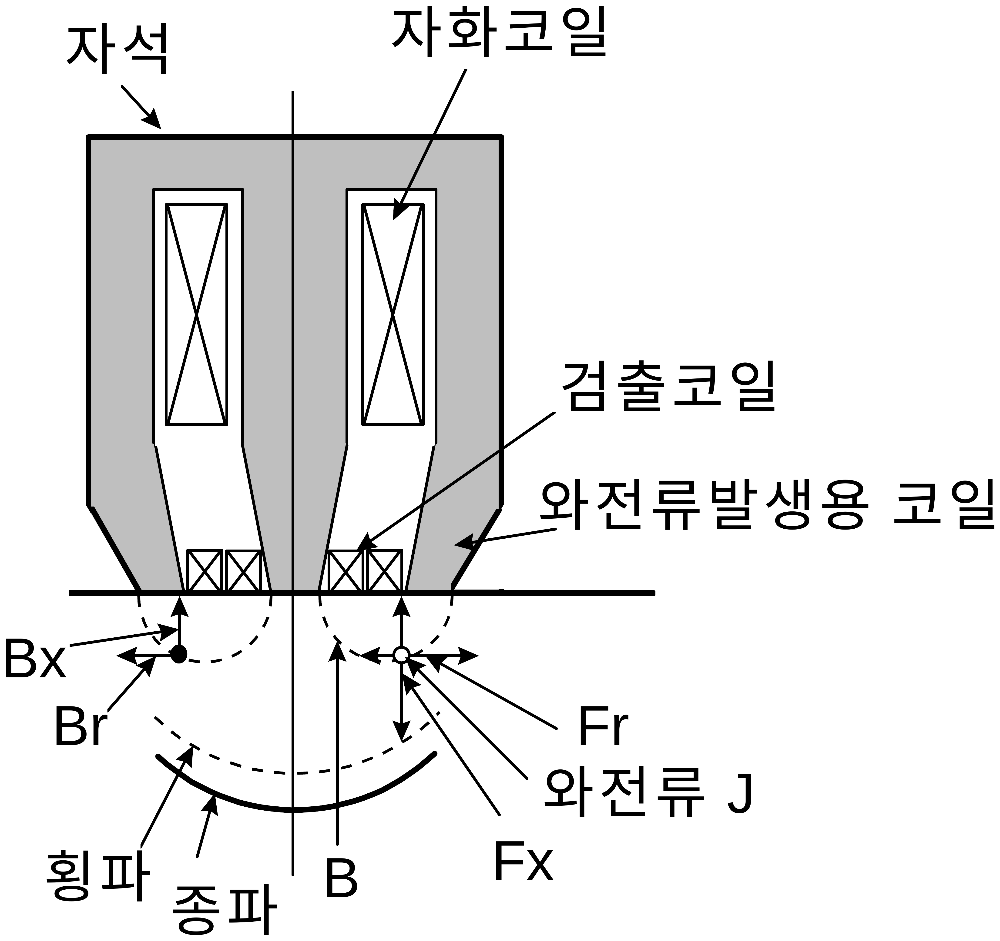
자계중의 전자가 받는 힘(로렌츠의 힘)을 이용하여 초음파의 방사나 검출을 하는 것으로 고음용 스피커인 다이나믹 스피커의 구조와 같다. 이것은 앞에서 살펴본 압전형이나 자왜형의 진동자와 달리 비공진형이다. 따라서 주파수가 높아지면 변환 효율이 나빠지며 주파수 선택성이 없어 노이즈 영향을 받기 쉽지만 공진 주파수에 좌우되지 않고 간단하다는 이점이 있으나 최근에는거의 사용되지 않고 있다.
그림 1-41 전자유도형 초음파 센서
[그림 1-41]에 전자 유도형 센서를 나타냈다. 이 형태의 센서는 금속의 상태를 관찰하는데 응용되고 원리는 금속표면에 놓인 코일에 전류를 흘렸을 때에 금속내에 유기되는 와전류와 자계의 상호작용에 의하여 비접촉으로 금속내에 초음파를 발생하는 것이며 검출은 반대로 초음파와 자계와의 상호작용에 의하여 금속내에 발생하는 와전류를 코일에 의하여 검출하는 것이다.
이를 좀 더 세부적으로 살펴보면 그림의 사선으로 표시된 자석에 의하여 금속중에는 표면에 평행하고 방사상으로 분포하는 자속밀도 Br이 생긴다. 여기서 금속에 자장을 발생시키기 위한 코일에 교류 전류를 주면 금속 표면층에 발생하는 와전류 J는 원형으로 분포한다. 이 와전류 J와 자속밀도 Br에 의하여 금속 표면에 수직한 성분인 로렌츠의 힘 Fz = J×Br이 생기고 이것에 의하여 금속중에 종파를 발생시킬 수가 있으며 검출은 반대의 과정으로 설명할 수 있다.
이 형식의 초음파센서로는 피측정 재료에 접촉하지 않고 초음파의 발생과 검출이 가능하므로 표면 온도가 높든지 거칠더라도 두께 측정이 가능하며 내부결함의 검출에도 이용할 수 있으나 종래의 탐촉자에 비해 변환 효율이 나쁘고 금속면과의 간격에 의해 감도가 변하므로 간격을 일정하게 유지해야 한다.
④ 고주파형 초음파센서
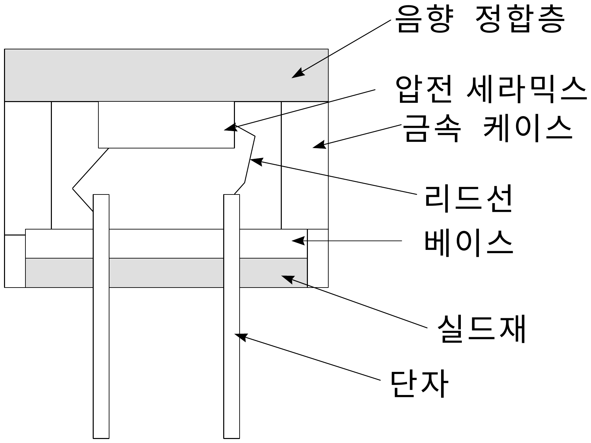
공중 초음파센서는 고주파의 초음파를 공중에 방사하고 물체로부터의 반사파를 검지함으로써 물체의 유무나 물체까지의 거리를 계측할 수 있다. 이 때문에 방법장치의 근접 스위치, 교통신호 변환장치, 자동차의 백 넘버 검지 등에 이용되고 있다.
그림 1-42 고주파형 초음파센서
또한 초음파의 전파를 이용한 것으로 슬라이드 영사기의 리모트 컨트롤이나 탄산가스 농도계, 공기 유량계 등이 있다. [그림 1-42]에 고주파형 초음파센서의 구조를 나타냈다. 주파수가 수십 KHz인 공중 초음파센서는 압전세라믹을 결합시킨 바이모르크 진동자의 왜곡 진동을 이용하나80[KHz]이상의 주파수에서는 실용적인 특성을 얻을 수 없으므로 이러한 고주
파에서는 압전 세라믹의 세로진동을 이용한다. 이 경우 압전 세라믹과 공기의 음향 임피던스 매칭이 중요하며 음향 정합층에서 특수 플라스틱을 압전 세라믹에 접착하여 공기와의 정합을 도모하고 있다. 이 구조는 구동 펄스전압을 인가한 후의 펄스 하강시간이 짧기 때문에 하나의 소자로 초음파를 송수신할 수 있다.
11릴레이의 기초
릴레이(Relay)는 전자계전기라고도 하며 릴레이 시퀜스의 회로를 구성하는 주요기기로 되었다. 여기서는 릴레이의 원리와 구조에 대하여 알아 보기로 하자.
1-1. 릴레이의 원리와 구조
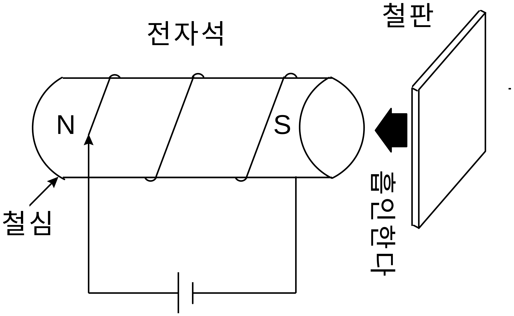
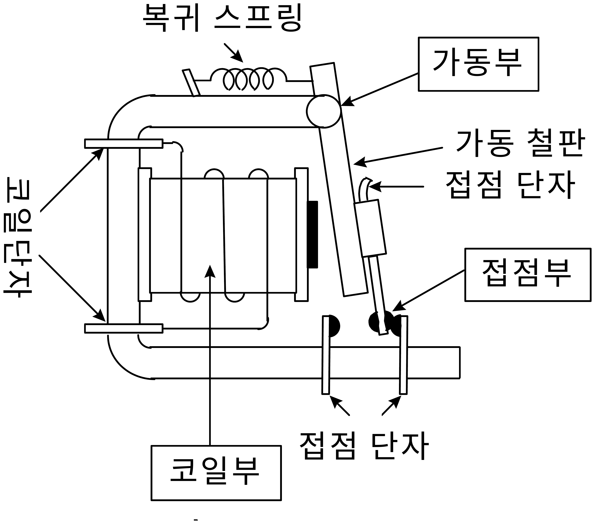
그림(2-1)은 릴레이의 원리도이다. 그림과 같이 철심에 코일을 감고 그 코일에 전류를 흐르게 하면 철심이 전자석으로 되어 철편을 흡입한다. 이 철편에 전기적 접점을 설치하여 전기회로의 스위치 작용을 부여한 것이 그림(2-2)이다. 구조는 접점부 및 가동부로 되어있다.
그림 2-1 릴레이의 원리그림 2-2 릴레이의 구조
1-2. 릴레이가 갖추어야할 조건 및 장,단점
(1) 릴레이가 갖추어야할 조건
① 거의 정비를 요하지 않을 것
② 많은 독립회로를 제어할 수 있을 것.
③ 여러 동작 전압 고전류에 쉽게 동작 가능할 것.
④ 개폐 시간이 짧을 것.
(2) 장 점
① 여러 동작 전압에 쉽게 동작 된다.
② 주위 온도의 영향을 거의 받지 않는다.
③ 오프 상태에 있는 접점은 고저항이다.
④ 여러 독립 회로를 개폐할 수 있다.
⑤ 제어회로와 주회로 사이에 절연이 되어 있다.
(3) 단 점
① 상시 개방점은 아아크 및 산화에 의해 마모가 된다.
② 트랜지스터에 비해 큰 공간을 요구 한다.
③ 개폐를 하는 동안 잡음이 일어난다.
④ 개폐속도가 3m/s∼7m/s로 제한 되어 있다.
1-3. 릴레이의 접점
접점의 종류는 푸시버턴 스위치와 마찬가지로 a접점, b접점, c접점이 있다. 코일과 접점의 동작을 블록도로 표시하면 그림(1-3)과 같다.
코일에 전류가 흐른다. | 전자석에 의하여 접점을 흡입 한다. | 코일의 전류를 정지 시킨다. | 전자석의 흡인력이 없어진다. | 스프링으로 접점이 복귀한다 |
그림 2-3 코일과 접점동작의 블록도
그림(2-4)에 릴레이의 a접점과 b접점의 동작 상태를 표시한다. 또한 릴레이의 그림 기호는 접점과 코일로 나누어 표시했으며 릴레이의 a접점을 Ra, b접점을 Rb로서 표시한다.
릴레이의 a접점…코일에 전류가 흐르면 접점이 닫히고 전류를정지시키면 접점이 열린다. | 그림 기호 |
접점 | |
코일 | |
릴레이의 b접점…코일에 전류가 흐르면 접점이 열리고 전류를정지시키면 접점이 닫힌다. | 그림 기호 |
접점 | |
코일 | |
그림 2-4 a접점과 b접점의 동작 그림


릴레이의 c접점의 동작 | ||
단자명 | 그림 기호 | |
●C단자(Common)는 공통단자 ●NO단자(Normally Open)는 정상열림 단자 ●NC단자(Normally Close)는 정상닫힘 단자 | 접 점 | 코일 |
그림 2-5 c접점의 동작과 그림기호
그림(2-5)와 같이 2개 고정 단자가 하나의 가동 접점을 가진 공통의 단자로서 교대로 개폐동작을 하는 것은 c접점이라 한다.
즉 릴레이는 기본적으로 c접점으로 구성되어 있으며 C단자와 NO단자를 사용하면 a접점에서, c단자와 NC 단자를 사용하면 b접점으로 사용할 수 있다.